# Topic changes: 2025 vs 2026 This compares **available transcribed recordings**, not the complete festival programmes. The corpus has 114 talks from 2025 and 105 from 2026. Podcast publication ends in May 2026 for the 2025 subset and September 2026 for the 2026 subset; programme areas may have been uploaded in batches. Apparent shifts can therefore reflect recording availability and selected programme areas, not a change in society or festival-wide priorities. No claim of significance or causal evolution is made. The shared 236-topic Jev vocabulary and 20-category dictionary keep labels comparable. Primary percentages use each year's **total segmented time, including unassigned**. Talk coverage is the proportion of that year's talks containing a topic; it is nonadditive. Segment-share and assigned-time-only alternatives are included in CSVs (unassigned rows should not be interpreted as assigned-time shares). Within-parent percentages divide each subtopic's time by its category's time in the same year. A subtopic can gain global share just because its whole category grew; within-parent changes show shifts in the category's composition. CSV decomposition splits global change into parent expansion at the old mix, plus mix change at the new parent size; it is an accounting identity whose components depend on ordering. “Only observed in 2026/2025” means zero saved primary-label segments in the other year, not that the subject was newly invented or disappeared. All such topics are exported. A separate support flag requires at least 10 minutes across 2 talks in the observed year; sparse examples remain visible. Categories/subtopics have no refit.
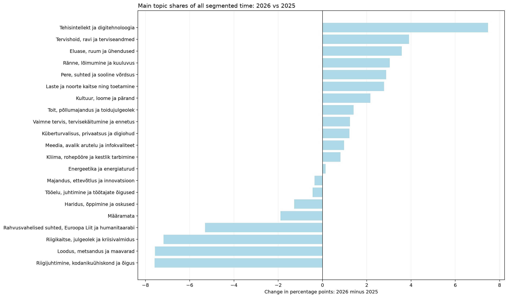
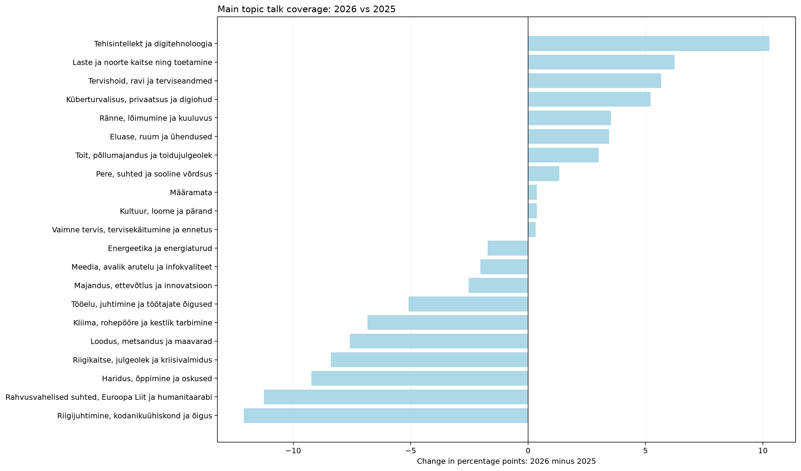
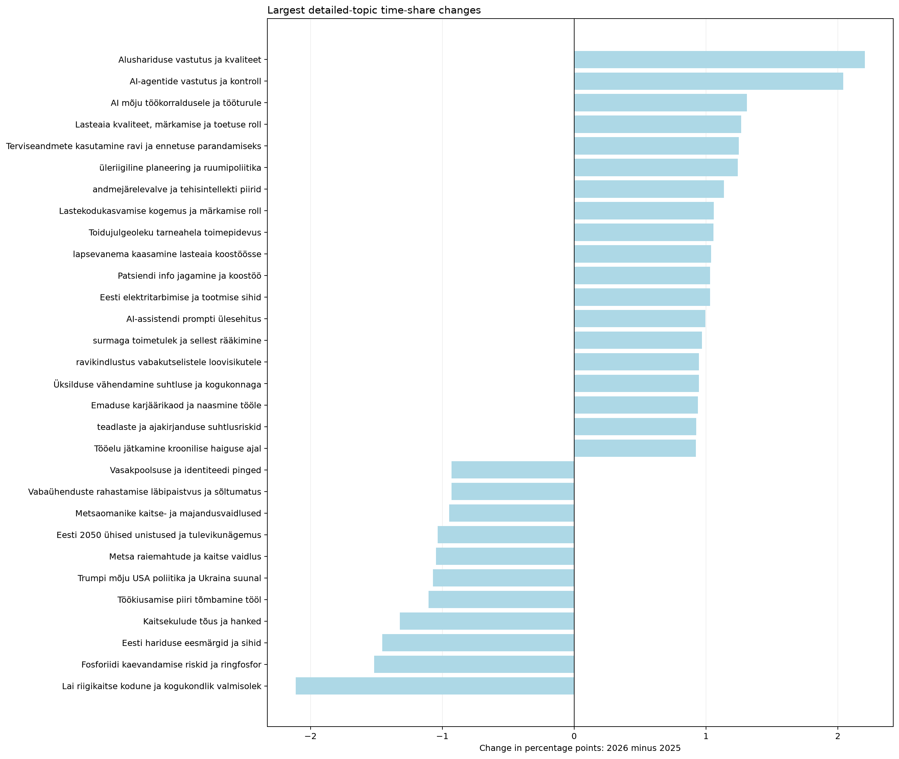
| jev_high_level_name | time_share_2025 | time_share_2026 | time_share_delta_pp | talk_coverage_2025 | talk_coverage_2026 |
|---|---|---|---|---|---|
| Tehisintellekt ja digitehnoloogia | 0.73 | 8.21 | 7.47 | 8.77 | 19.05 |
| Laste ja noorte kaitse ning toetamine | 2.35 | 5.13 | 2.78 | 6.14 | 12.38 |
| Kliima, rohepööre ja kestlik tarbimine | 3.91 | 4.72 | 0.81 | 20.18 | 13.33 |
| Kultuur, loome ja pärand | 2.08 | 4.23 | 2.16 | 4.39 | 4.76 |
| Küberturvalisus, privaatsus ja digiohud | 1.39 | 2.61 | 1.22 | 5.26 | 10.48 |
| Riigikaitse, julgeolek ja kriisivalmidus | 8.10 | 0.92 | -7.18 | 13.16 | 4.76 |
| Majandus, ettevõtlus ja innovatsioon | 3.16 | 2.80 | -0.36 | 14.91 | 12.38 |
| Haridus, õppimine ja oskused | 13.73 | 12.45 | -1.28 | 36.84 | 27.62 |
| Energeetika ja energiaturud | 5.91 | 6.05 | 0.14 | 13.16 | 11.43 |
| Pere, suhted ja sooline võrdsus | 1.85 | 4.72 | 2.87 | 4.39 | 5.71 |
| Toit, põllumajandus ja toidujulgeolek | 0.23 | 1.64 | 1.41 | 1.75 | 4.76 |
| Riigijuhtimine, kodanikuühiskond ja õigus | 9.33 | 1.75 | -7.58 | 25.44 | 13.33 |
| Tervishoid, ravi ja terviseandmed | 6.85 | 10.76 | 3.91 | 10.53 | 16.19 |
| Rahvusvahelised suhted, Euroopa Liit ja humanitaarabi | 6.23 | 0.92 | -5.31 | 13.16 | 1.90 |
| Meedia, avalik arutelu ja infokvaliteet | 2.23 | 3.21 | 0.98 | 9.65 | 7.62 |
| Ränne, lõimumine ja kuuluvus | 2.11 | 5.15 | 3.04 | 7.89 | 11.43 |
| Loodus, metsandus ja maavarad | 7.90 | 0.34 | -7.56 | 11.40 | 3.81 |
| Eluase, ruum ja ühendused | 2.64 | 6.23 | 3.58 | 7.02 | 10.48 |
| Määramata | 7.15 | 5.26 | -1.89 | 71.05 | 71.43 |
| Vaimne tervis, tervisekäitumine ja ennetus | 4.57 | 5.80 | 1.24 | 14.91 | 15.24 |
| Tööelu, juhtimine ja töötajate õigused | 7.53 | 7.09 | -0.44 | 18.42 | 13.33 |
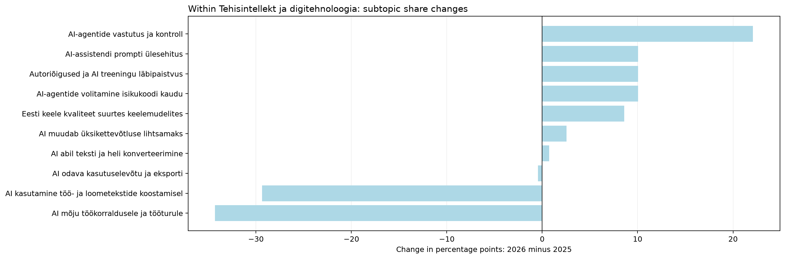
| jev_topic_id | jev_topic_name | jev_high_level_id | jev_high_level_name | minutes_2025 | minutes_2026 | segments_2025 | segments_2026 | talks_2025 | talks_2026 | time_share_2025 | segment_share_2025 | talk_coverage_2025 | assigned_time_share_2025 | time_share_2026 | segment_share_2026 | talk_coverage_2026 | assigned_time_share_2026 | time_share_delta_pp | segment_share_delta_pp | talk_coverage_delta_pp | assigned_time_share_delta_pp | status | supported_2026 | supported_2025 | within_parent_share_2025 | within_parent_share_2026 | within_parent_delta_pp | parent_scale_component_pp | within_parent_mix_component_pp |
|---|---|---|---|---|---|---|---|---|---|---|---|---|---|---|---|---|---|---|---|---|---|---|---|---|---|---|---|---|---|
| 6.0 | AI-agentide volitamine isikukoodi kaudu | ai | Tehisintellekt ja digitehnoloogia | 0.00 | 75.36 | 0.0 | 16.0 | 0.0 | 3.0 | 0.00 | 0.00 | 0.00 | 0.00 | 0.82 | 0.81 | 2.86 | 0.87 | 0.82 | 0.81 | 2.86 | 0.87 | only_observed_2026 | True | False | 0.00 | 10.04 | 10.04 | 0.00 | 0.82 |
| 9.0 | AI-assistendi prompti ülesehitus | ai | Tehisintellekt ja digitehnoloogia | 1.66 | 92.51 | 1.0 | 18.0 | 1.0 | 2.0 | 0.02 | 0.05 | 0.88 | 0.02 | 1.01 | 0.91 | 1.90 | 1.07 | 1.00 | 0.86 | 1.03 | 1.05 | both_years | True | False | 2.27 | 12.32 | 10.05 | 0.17 | 0.83 |
| 49.0 | Eesti keele kvaliteet suurtes keelemudelites | ai | Tehisintellekt ja digitehnoloogia | 0.00 | 64.63 | 0.0 | 15.0 | 0.0 | 5.0 | 0.00 | 0.00 | 0.00 | 0.00 | 0.71 | 0.76 | 4.76 | 0.75 | 0.71 | 0.76 | 4.76 | 0.75 | only_observed_2026 | True | False | 0.00 | 8.61 | 8.61 | 0.00 | 0.71 |
| 112.0 | Autoriõigused ja AI treeningu läbipaistvus | ai | Tehisintellekt ja digitehnoloogia | 0.00 | 75.37 | 0.0 | 16.0 | 0.0 | 3.0 | 0.00 | 0.00 | 0.00 | 0.00 | 0.82 | 0.81 | 2.86 | 0.87 | 0.82 | 0.81 | 2.86 | 0.87 | only_observed_2026 | True | False | 0.00 | 10.04 | 10.04 | 0.00 | 0.82 |
| 120.0 | AI odava kasutuselevõtu ja eksporti | ai | Tehisintellekt ja digitehnoloogia | 3.33 | 30.86 | 1.0 | 5.0 | 1.0 | 2.0 | 0.03 | 0.05 | 0.88 | 0.04 | 0.34 | 0.25 | 1.90 | 0.36 | 0.30 | 0.21 | 1.03 | 0.32 | both_years | True | False | 4.57 | 4.11 | -0.45 | 0.34 | -0.04 |
| 155.0 | AI-agentide vastutus ja kontroll | ai | Tehisintellekt ja digitehnoloogia | 2.21 | 188.61 | 1.0 | 43.0 | 1.0 | 9.0 | 0.02 | 0.05 | 0.88 | 0.02 | 2.06 | 2.17 | 8.57 | 2.18 | 2.04 | 2.13 | 7.69 | 2.15 | both_years | True | False | 3.03 | 25.13 | 22.10 | 0.23 | 1.81 |
| 170.0 | AI abil teksti ja heli konverteerimine | ai | Tehisintellekt ja digitehnoloogia | 0.00 | 5.39 | 0.0 | 1.0 | 0.0 | 1.0 | 0.00 | 0.00 | 0.00 | 0.00 | 0.06 | 0.05 | 0.95 | 0.06 | 0.06 | 0.05 | 0.95 | 0.06 | only_observed_2026 | False | False | 0.00 | 0.72 | 0.72 | 0.00 | 0.06 |
| 186.0 | AI mõju töökorraldusele ja tööturule | ai | Tehisintellekt ja digitehnoloogia | 40.24 | 156.86 | 9.0 | 33.0 | 7.0 | 12.0 | 0.41 | 0.42 | 6.14 | 0.44 | 1.72 | 1.67 | 11.43 | 1.81 | 1.31 | 1.25 | 5.29 | 1.37 | both_years | True | True | 55.19 | 20.90 | -34.30 | 4.13 | -2.82 |
| 199.0 | AI kasutamine töö- ja loometekstide koostamisel | ai | Tehisintellekt ja digitehnoloogia | 22.79 | 14.28 | 7.0 | 5.0 | 4.0 | 4.0 | 0.23 | 0.32 | 3.51 | 0.25 | 0.16 | 0.25 | 3.81 | 0.16 | -0.07 | -0.07 | 0.30 | -0.08 | both_years | True | True | 31.25 | 1.90 | -29.35 | 2.34 | -2.41 |
| 234.0 | AI muudab üksikettevõtluse lihtsamaks | ai | Tehisintellekt ja digitehnoloogia | 2.69 | 46.73 | 1.0 | 9.0 | 1.0 | 4.0 | 0.03 | 0.05 | 0.88 | 0.03 | 0.51 | 0.46 | 3.81 | 0.54 | 0.48 | 0.41 | 2.93 | 0.51 | both_years | True | False | 3.68 | 6.23 | 2.54 | 0.28 | 0.21 |
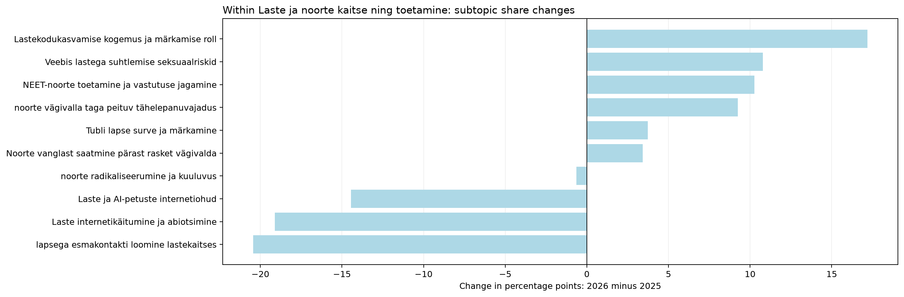
| jev_topic_id | jev_topic_name | jev_high_level_id | jev_high_level_name | minutes_2025 | minutes_2026 | segments_2025 | segments_2026 | talks_2025 | talks_2026 | time_share_2025 | segment_share_2025 | talk_coverage_2025 | assigned_time_share_2025 | time_share_2026 | segment_share_2026 | talk_coverage_2026 | assigned_time_share_2026 | time_share_delta_pp | segment_share_delta_pp | talk_coverage_delta_pp | assigned_time_share_delta_pp | status | supported_2026 | supported_2025 | within_parent_share_2025 | within_parent_share_2026 | within_parent_delta_pp | parent_scale_component_pp | within_parent_mix_component_pp |
|---|---|---|---|---|---|---|---|---|---|---|---|---|---|---|---|---|---|---|---|---|---|---|---|---|---|---|---|---|---|
| 0.0 | noorte radikaliseerumine ja kuuluvus | children | Laste ja noorte kaitse ning toetamine | 44.66 | 86.78 | 8.0 | 20.0 | 1.0 | 3.0 | 0.45 | 0.37 | 0.88 | 0.48 | 0.95 | 1.01 | 2.86 | 1.00 | 0.50 | 0.64 | 1.98 | 0.52 | both_years | True | False | 19.16 | 18.51 | -0.64 | 0.53 | -0.03 |
| 36.0 | Lastekodukasvamise kogemus ja märkamise roll | children | Laste ja noorte kaitse ning toetamine | 14.89 | 110.47 | 2.0 | 27.0 | 1.0 | 3.0 | 0.15 | 0.09 | 0.88 | 0.16 | 1.21 | 1.37 | 2.86 | 1.28 | 1.06 | 1.27 | 1.98 | 1.11 | both_years | True | False | 6.39 | 23.57 | 17.18 | 0.18 | 0.88 |
| 66.0 | NEET-noorte toetamine ja vastutuse jagamine | children | Laste ja noorte kaitse ning toetamine | 12.55 | 73.33 | 4.0 | 12.0 | 3.0 | 3.0 | 0.13 | 0.19 | 2.63 | 0.14 | 0.80 | 0.61 | 2.86 | 0.85 | 0.68 | 0.42 | 0.23 | 0.71 | both_years | True | True | 5.39 | 15.64 | 10.26 | 0.15 | 0.53 |
| 76.0 | Laste ja AI-petuste internetiohud | children | Laste ja noorte kaitse ning toetamine | 42.11 | 16.99 | 8.0 | 4.0 | 1.0 | 3.0 | 0.42 | 0.37 | 0.88 | 0.46 | 0.19 | 0.20 | 2.86 | 0.20 | -0.24 | -0.17 | 1.98 | -0.26 | both_years | True | False | 18.07 | 3.63 | -14.44 | 0.50 | -0.74 |
| 95.0 | Veebis lastega suhtlemise seksuaalriskid | children | Laste ja noorte kaitse ning toetamine | 16.27 | 83.27 | 3.0 | 21.0 | 3.0 | 1.0 | 0.16 | 0.14 | 2.63 | 0.18 | 0.91 | 1.06 | 0.95 | 0.96 | 0.75 | 0.92 | -1.68 | 0.78 | both_years | False | True | 6.98 | 17.77 | 10.79 | 0.19 | 0.55 |
| 125.0 | Tubli lapse surve ja märkamine | children | Laste ja noorte kaitse ning toetamine | 5.03 | 27.58 | 1.0 | 5.0 | 1.0 | 2.0 | 0.05 | 0.05 | 0.88 | 0.05 | 0.30 | 0.25 | 1.90 | 0.32 | 0.25 | 0.21 | 1.03 | 0.26 | both_years | True | False | 2.16 | 5.88 | 3.73 | 0.06 | 0.19 |
| 129.0 | lapsega esmakontakti loomine lastekaitses | children | Laste ja noorte kaitse ning toetamine | 50.41 | 5.58 | 10.0 | 2.0 | 1.0 | 2.0 | 0.51 | 0.46 | 0.88 | 0.55 | 0.06 | 0.10 | 1.90 | 0.06 | -0.45 | -0.36 | 1.03 | -0.48 | both_years | False | False | 21.62 | 1.19 | -20.43 | 0.60 | -1.05 |
| 183.0 | noorte vägivalla taga peituv tähelepanuvajadus | children | Laste ja noorte kaitse ning toetamine | 0.00 | 43.38 | 0.0 | 11.0 | 0.0 | 1.0 | 0.00 | 0.00 | 0.00 | 0.00 | 0.47 | 0.56 | 0.95 | 0.50 | 0.47 | 0.56 | 0.95 | 0.50 | only_observed_2026 | False | False | 0.00 | 9.25 | 9.25 | 0.00 | 0.47 |
| 209.0 | Laste internetikäitumine ja abiotsimine | children | Laste ja noorte kaitse ning toetamine | 47.19 | 5.34 | 11.0 | 1.0 | 4.0 | 1.0 | 0.48 | 0.51 | 3.51 | 0.51 | 0.06 | 0.05 | 0.95 | 0.06 | -0.42 | -0.46 | -2.56 | -0.45 | both_years | False | True | 20.25 | 1.14 | -19.11 | 0.56 | -0.98 |
| 232.0 | Noorte vanglast saatmine pärast rasket vägivalda | children | Laste ja noorte kaitse ning toetamine | 0.00 | 16.01 | 0.0 | 3.0 | 0.0 | 1.0 | 0.00 | 0.00 | 0.00 | 0.00 | 0.18 | 0.15 | 0.95 | 0.18 | 0.18 | 0.15 | 0.95 | 0.18 | only_observed_2026 | False | False | 0.00 | 3.42 | 3.42 | 0.00 | 0.18 |
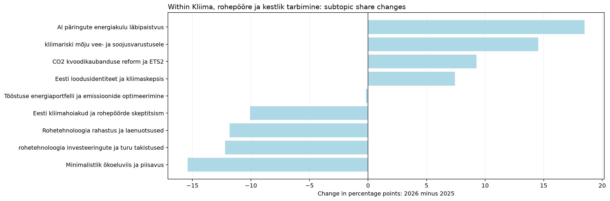
| jev_topic_id | jev_topic_name | jev_high_level_id | jev_high_level_name | minutes_2025 | minutes_2026 | segments_2025 | segments_2026 | talks_2025 | talks_2026 | time_share_2025 | segment_share_2025 | talk_coverage_2025 | assigned_time_share_2025 | time_share_2026 | segment_share_2026 | talk_coverage_2026 | assigned_time_share_2026 | time_share_delta_pp | segment_share_delta_pp | talk_coverage_delta_pp | assigned_time_share_delta_pp | status | supported_2026 | supported_2025 | within_parent_share_2025 | within_parent_share_2026 | within_parent_delta_pp | parent_scale_component_pp | within_parent_mix_component_pp |
|---|---|---|---|---|---|---|---|---|---|---|---|---|---|---|---|---|---|---|---|---|---|---|---|---|---|---|---|---|---|
| 5.0 | Rohetehnoloogia rahastus ja laenuotsused | climate | Kliima, rohepööre ja kestlik tarbimine | 54.14 | 9.21 | 9.0 | 1.0 | 4.0 | 1.0 | 0.55 | 0.42 | 3.51 | 0.59 | 0.10 | 0.05 | 0.95 | 0.11 | -0.44 | -0.37 | -2.56 | -0.48 | both_years | False | True | 13.95 | 2.13 | -11.82 | 0.11 | -0.56 |
| 24.0 | Eesti kliimahoiakud ja rohepöörde skeptitsism | climate | Kliima, rohepööre ja kestlik tarbimine | 115.72 | 85.26 | 25.0 | 17.0 | 10.0 | 5.0 | 1.17 | 1.16 | 8.77 | 1.26 | 0.93 | 0.86 | 4.76 | 0.98 | -0.23 | -0.30 | -4.01 | -0.27 | both_years | True | True | 29.82 | 19.74 | -10.08 | 0.24 | -0.48 |
| 37.0 | kliimariski mõju vee- ja soojusvarustusele | climate | Kliima, rohepööre ja kestlik tarbimine | 11.40 | 75.42 | 4.0 | 16.0 | 2.0 | 4.0 | 0.11 | 0.19 | 1.75 | 0.12 | 0.82 | 0.81 | 3.81 | 0.87 | 0.71 | 0.62 | 2.06 | 0.75 | both_years | True | True | 2.94 | 17.46 | 14.53 | 0.02 | 0.69 |
| 44.0 | Tööstuse energiaportfelli ja emissioonide optimeerimine | climate | Kliima, rohepööre ja kestlik tarbimine | 24.46 | 26.46 | 6.0 | 4.0 | 3.0 | 2.0 | 0.25 | 0.28 | 2.63 | 0.27 | 0.29 | 0.20 | 1.90 | 0.31 | 0.04 | -0.08 | -0.73 | 0.04 | both_years | True | True | 6.30 | 6.13 | -0.18 | 0.05 | -0.01 |
| 109.0 | AI päringute energiakulu läbipaistvus | climate | Kliima, rohepööre ja kestlik tarbimine | 0.00 | 79.82 | 0.0 | 16.0 | 0.0 | 2.0 | 0.00 | 0.00 | 0.00 | 0.00 | 0.87 | 0.81 | 1.90 | 0.92 | 0.87 | 0.81 | 1.90 | 0.92 | only_observed_2026 | True | False | 0.00 | 18.48 | 18.48 | 0.00 | 0.87 |
| 144.0 | Minimalistlik ökoeluviis ja piisavus | climate | Kliima, rohepööre ja kestlik tarbimine | 59.76 | 0.00 | 13.0 | 0.0 | 2.0 | 0.0 | 0.60 | 0.60 | 1.75 | 0.65 | 0.00 | 0.00 | 0.00 | 0.00 | -0.60 | -0.60 | -1.75 | -0.65 | only_observed_2025 | False | True | 15.40 | 0.00 | -15.40 | 0.13 | -0.73 |
| 152.0 | CO2 kvoodikaubanduse reform ja ETS2 | climate | Kliima, rohepööre ja kestlik tarbimine | 23.94 | 66.67 | 6.0 | 14.0 | 4.0 | 3.0 | 0.24 | 0.28 | 3.51 | 0.26 | 0.73 | 0.71 | 2.86 | 0.77 | 0.49 | 0.43 | -0.65 | 0.51 | both_years | True | True | 6.17 | 15.44 | 9.27 | 0.05 | 0.44 |
| 176.0 | Eesti loodusidentiteet ja kliimaskepsis | climate | Kliima, rohepööre ja kestlik tarbimine | 3.24 | 35.67 | 2.0 | 9.0 | 2.0 | 2.0 | 0.03 | 0.09 | 1.75 | 0.04 | 0.39 | 0.46 | 1.90 | 0.41 | 0.36 | 0.36 | 0.15 | 0.38 | both_years | True | False | 0.84 | 8.26 | 7.42 | 0.01 | 0.35 |
| 216.0 | rohetehnoloogia investeeringute ja turu takistused | climate | Kliima, rohepööre ja kestlik tarbimine | 95.36 | 53.38 | 20.0 | 10.0 | 12.0 | 5.0 | 0.96 | 0.93 | 10.53 | 1.04 | 0.58 | 0.51 | 4.76 | 0.62 | -0.38 | -0.42 | -5.76 | -0.42 | both_years | True | True | 24.58 | 12.36 | -12.22 | 0.20 | -0.58 |
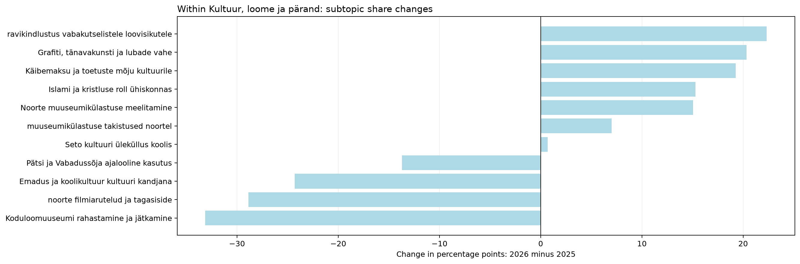
| jev_topic_id | jev_topic_name | jev_high_level_id | jev_high_level_name | minutes_2025 | minutes_2026 | segments_2025 | segments_2026 | talks_2025 | talks_2026 | time_share_2025 | segment_share_2025 | talk_coverage_2025 | assigned_time_share_2025 | time_share_2026 | segment_share_2026 | talk_coverage_2026 | assigned_time_share_2026 | time_share_delta_pp | segment_share_delta_pp | talk_coverage_delta_pp | assigned_time_share_delta_pp | status | supported_2026 | supported_2025 | within_parent_share_2025 | within_parent_share_2026 | within_parent_delta_pp | parent_scale_component_pp | within_parent_mix_component_pp |
|---|---|---|---|---|---|---|---|---|---|---|---|---|---|---|---|---|---|---|---|---|---|---|---|---|---|---|---|---|---|
| 26.0 | Islami ja kristluse roll ühiskonnas | culture | Kultuur, loome ja pärand | 0.00 | 59.20 | 0.0 | 12.0 | 0.0 | 1.0 | 0.00 | 0.00 | 0.00 | 0.00 | 0.65 | 0.61 | 0.95 | 0.68 | 0.65 | 0.61 | 0.95 | 0.68 | only_observed_2026 | False | False | 0.00 | 15.29 | 15.29 | 0.00 | 0.65 |
| 59.0 | Käibemaksu ja toetuste mõju kultuurile | culture | Kultuur, loome ja pärand | 0.00 | 74.65 | 0.0 | 14.0 | 0.0 | 2.0 | 0.00 | 0.00 | 0.00 | 0.00 | 0.82 | 0.71 | 1.90 | 0.86 | 0.82 | 0.71 | 1.90 | 0.86 | only_observed_2026 | True | False | 0.00 | 19.28 | 19.28 | 0.00 | 0.82 |
| 77.0 | ravikindlustus vabakutselistele loovisikutele | culture | Kultuur, loome ja pärand | 0.00 | 86.47 | 0.0 | 15.0 | 0.0 | 2.0 | 0.00 | 0.00 | 0.00 | 0.00 | 0.95 | 0.76 | 1.90 | 1.00 | 0.95 | 0.76 | 1.90 | 1.00 | only_observed_2026 | True | False | 0.00 | 22.33 | 22.33 | 0.00 | 0.95 |
| 78.0 | Koduloomuuseumi rahastamine ja jätkamine | culture | Kultuur, loome ja pärand | 68.30 | 0.00 | 15.0 | 0.0 | 1.0 | 0.0 | 0.69 | 0.70 | 0.88 | 0.74 | 0.00 | 0.00 | 0.00 | 0.00 | -0.69 | -0.70 | -0.88 | -0.74 | only_observed_2025 | False | False | 33.14 | 0.00 | -33.14 | 0.71 | -1.40 |
| 86.0 | Grafiti, tänavakunsti ja lubade vahe | culture | Kultuur, loome ja pärand | 0.00 | 78.75 | 0.0 | 16.0 | 0.0 | 1.0 | 0.00 | 0.00 | 0.00 | 0.00 | 0.86 | 0.81 | 0.95 | 0.91 | 0.86 | 0.81 | 0.95 | 0.91 | only_observed_2026 | False | False | 0.00 | 20.34 | 20.34 | 0.00 | 0.86 |
| 126.0 | noorte filmiarutelud ja tagasiside | culture | Kultuur, loome ja pärand | 59.49 | 0.00 | 10.0 | 0.0 | 1.0 | 0.0 | 0.60 | 0.46 | 0.88 | 0.65 | 0.00 | 0.00 | 0.00 | 0.00 | -0.60 | -0.46 | -0.88 | -0.65 | only_observed_2025 | False | False | 28.86 | 0.00 | -28.86 | 0.62 | -1.22 |
| 162.0 | Seto kultuuri üleküllus koolis | culture | Kultuur, loome ja pärand | 0.00 | 2.65 | 0.0 | 1.0 | 0.0 | 1.0 | 0.00 | 0.00 | 0.00 | 0.00 | 0.03 | 0.05 | 0.95 | 0.03 | 0.03 | 0.05 | 0.95 | 0.03 | only_observed_2026 | False | False | 0.00 | 0.68 | 0.68 | 0.00 | 0.03 |
| 164.0 | Emadus ja koolikultuur kultuuri kandjana | culture | Kultuur, loome ja pärand | 50.08 | 0.00 | 10.0 | 0.0 | 2.0 | 0.0 | 0.50 | 0.46 | 1.75 | 0.54 | 0.00 | 0.00 | 0.00 | 0.00 | -0.50 | -0.46 | -1.75 | -0.54 | only_observed_2025 | False | True | 24.30 | 0.00 | -24.30 | 0.52 | -1.03 |
| 165.0 | Pätsi ja Vabadussõja ajalooline kasutus | culture | Kultuur, loome ja pärand | 28.23 | 0.00 | 5.0 | 0.0 | 1.0 | 0.0 | 0.28 | 0.23 | 0.88 | 0.31 | 0.00 | 0.00 | 0.00 | 0.00 | -0.28 | -0.23 | -0.88 | -0.31 | only_observed_2025 | False | False | 13.70 | 0.00 | -13.70 | 0.30 | -0.58 |
| 177.0 | muuseumikülastuse takistused noortel | culture | Kultuur, loome ja pärand | 0.00 | 27.15 | 0.0 | 5.0 | 0.0 | 1.0 | 0.00 | 0.00 | 0.00 | 0.00 | 0.30 | 0.25 | 0.95 | 0.31 | 0.30 | 0.25 | 0.95 | 0.31 | only_observed_2026 | False | False | 0.00 | 7.01 | 7.01 | 0.00 | 0.30 |
| 205.0 | Noorte muuseumikülastuse meelitamine | culture | Kultuur, loome ja pärand | 0.00 | 58.28 | 0.0 | 12.0 | 0.0 | 1.0 | 0.00 | 0.00 | 0.00 | 0.00 | 0.64 | 0.61 | 0.95 | 0.67 | 0.64 | 0.61 | 0.95 | 0.67 | only_observed_2026 | False | False | 0.00 | 15.05 | 15.05 | 0.00 | 0.64 |
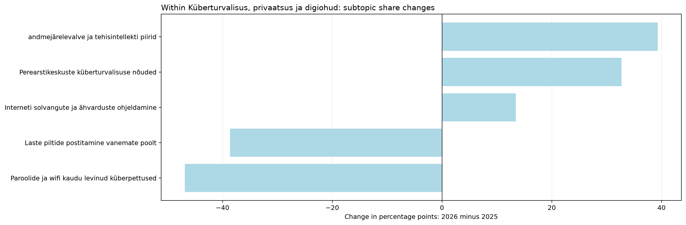
| jev_topic_id | jev_topic_name | jev_high_level_id | jev_high_level_name | minutes_2025 | minutes_2026 | segments_2025 | segments_2026 | talks_2025 | talks_2026 | time_share_2025 | segment_share_2025 | talk_coverage_2025 | assigned_time_share_2025 | time_share_2026 | segment_share_2026 | talk_coverage_2026 | assigned_time_share_2026 | time_share_delta_pp | segment_share_delta_pp | talk_coverage_delta_pp | assigned_time_share_delta_pp | status | supported_2026 | supported_2025 | within_parent_share_2025 | within_parent_share_2026 | within_parent_delta_pp | parent_scale_component_pp | within_parent_mix_component_pp |
|---|---|---|---|---|---|---|---|---|---|---|---|---|---|---|---|---|---|---|---|---|---|---|---|---|---|---|---|---|---|
| 41.0 | Laste piltide postitamine vanemate poolt | cyber | Küberturvalisus, privaatsus ja digiohud | 53.33 | 0.00 | 11.0 | 0.0 | 1.0 | 0.0 | 0.54 | 0.51 | 0.88 | 0.58 | 0.00 | 0.00 | 0.00 | 0.00 | -0.54 | -0.51 | -0.88 | -0.58 | only_observed_2025 | False | False | 38.62 | 0.00 | -38.62 | 0.47 | -1.01 |
| 60.0 | andmejärelevalve ja tehisintellekti piirid | cyber | Küberturvalisus, privaatsus ja digiohud | 12.45 | 115.36 | 4.0 | 23.0 | 3.0 | 9.0 | 0.13 | 0.19 | 2.63 | 0.14 | 1.26 | 1.16 | 8.57 | 1.33 | 1.14 | 0.98 | 5.94 | 1.20 | both_years | True | True | 9.02 | 48.33 | 39.32 | 0.11 | 1.03 |
| 63.0 | Paroolide ja wifi kaudu levinud küberpettused | cyber | Küberturvalisus, privaatsus ja digiohud | 64.75 | 0.00 | 14.0 | 0.0 | 1.0 | 0.0 | 0.65 | 0.65 | 0.88 | 0.70 | 0.00 | 0.00 | 0.00 | 0.00 | -0.65 | -0.65 | -0.88 | -0.70 | only_observed_2025 | False | False | 46.88 | 0.00 | -46.88 | 0.57 | -1.22 |
| 110.0 | Perearstikeskuste küberturvalisuse nõuded | cyber | Küberturvalisus, privaatsus ja digiohud | 0.00 | 78.09 | 0.0 | 13.0 | 0.0 | 1.0 | 0.00 | 0.00 | 0.00 | 0.00 | 0.85 | 0.66 | 0.95 | 0.90 | 0.85 | 0.66 | 0.95 | 0.90 | only_observed_2026 | False | False | 0.00 | 32.72 | 32.72 | 0.00 | 0.85 |
| 154.0 | Interneti solvangute ja ähvarduste ohjeldamine | cyber | Küberturvalisus, privaatsus ja digiohud | 7.58 | 45.21 | 2.0 | 8.0 | 2.0 | 1.0 | 0.08 | 0.09 | 1.75 | 0.08 | 0.49 | 0.40 | 0.95 | 0.52 | 0.42 | 0.31 | -0.80 | 0.44 | both_years | False | False | 5.49 | 18.94 | 13.46 | 0.07 | 0.35 |
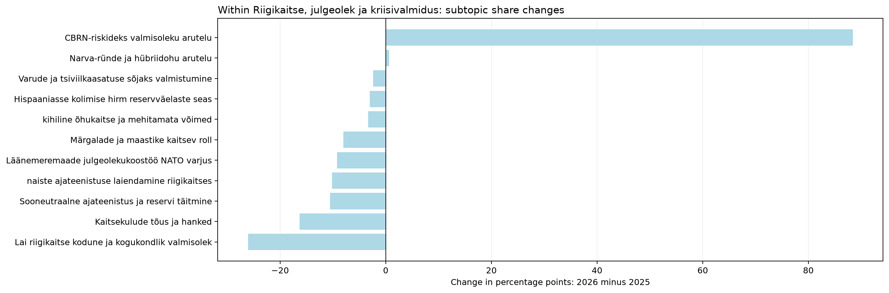
| jev_topic_id | jev_topic_name | jev_high_level_id | jev_high_level_name | minutes_2025 | minutes_2026 | segments_2025 | segments_2026 | talks_2025 | talks_2026 | time_share_2025 | segment_share_2025 | talk_coverage_2025 | assigned_time_share_2025 | time_share_2026 | segment_share_2026 | talk_coverage_2026 | assigned_time_share_2026 | time_share_delta_pp | segment_share_delta_pp | talk_coverage_delta_pp | assigned_time_share_delta_pp | status | supported_2026 | supported_2025 | within_parent_share_2025 | within_parent_share_2026 | within_parent_delta_pp | parent_scale_component_pp | within_parent_mix_component_pp |
|---|---|---|---|---|---|---|---|---|---|---|---|---|---|---|---|---|---|---|---|---|---|---|---|---|---|---|---|---|---|
| 29.0 | Läänemeremaade julgeolekukoostöö NATO varjus | defence | Riigikaitse, julgeolek ja kriisivalmidus | 74.12 | 0.00 | 14.0 | 0.0 | 3.0 | 0.0 | 0.75 | 0.65 | 2.63 | 0.80 | 0.00 | 0.00 | 0.00 | 0.00 | -0.75 | -0.65 | -2.63 | -0.80 | only_observed_2025 | False | True | 9.22 | 0.00 | -9.22 | -0.66 | -0.08 |
| 45.0 | Lai riigikaitse kodune ja kogukondlik valmisolek | defence | Riigikaitse, julgeolek ja kriisivalmidus | 209.54 | 0.00 | 44.0 | 0.0 | 7.0 | 0.0 | 2.11 | 2.04 | 6.14 | 2.27 | 0.00 | 0.00 | 0.00 | 0.00 | -2.11 | -2.04 | -6.14 | -2.27 | only_observed_2025 | False | True | 26.07 | 0.00 | -26.07 | -1.87 | -0.24 |
| 52.0 | Narva-ründe ja hübriidohu arutelu | defence | Riigikaitse, julgeolek ja kriisivalmidus | 57.36 | 6.55 | 10.0 | 2.0 | 1.0 | 2.0 | 0.58 | 0.46 | 0.88 | 0.62 | 0.07 | 0.10 | 1.90 | 0.08 | -0.51 | -0.36 | 1.03 | -0.55 | both_years | False | False | 7.14 | 7.79 | 0.65 | -0.51 | 0.01 |
| 80.0 | Varude ja tsiviilkaasatuse sõjaks valmistumine | defence | Riigikaitse, julgeolek ja kriisivalmidus | 49.53 | 3.19 | 9.0 | 2.0 | 2.0 | 2.0 | 0.50 | 0.42 | 1.75 | 0.54 | 0.03 | 0.10 | 1.90 | 0.04 | -0.46 | -0.32 | 0.15 | -0.50 | both_years | False | True | 6.16 | 3.79 | -2.37 | -0.44 | -0.02 |
| 83.0 | Kaitsekulude tõus ja hanked | defence | Riigikaitse, julgeolek ja kriisivalmidus | 131.11 | 0.00 | 28.0 | 0.0 | 7.0 | 0.0 | 1.32 | 1.30 | 6.14 | 1.42 | 0.00 | 0.00 | 0.00 | 0.00 | -1.32 | -1.30 | -6.14 | -1.42 | only_observed_2025 | False | True | 16.31 | 0.00 | -16.31 | -1.17 | -0.15 |
| 91.0 | Märgalade ja maastike kaitsev roll | defence | Riigikaitse, julgeolek ja kriisivalmidus | 64.47 | 0.00 | 11.0 | 0.0 | 1.0 | 0.0 | 0.65 | 0.51 | 0.88 | 0.70 | 0.00 | 0.00 | 0.00 | 0.00 | -0.65 | -0.51 | -0.88 | -0.70 | only_observed_2025 | False | False | 8.02 | 0.00 | -8.02 | -0.58 | -0.07 |
| 96.0 | CBRN-riskideks valmisoleku arutelu | defence | Riigikaitse, julgeolek ja kriisivalmidus | 0.00 | 74.42 | 0.0 | 16.0 | 0.0 | 1.0 | 0.00 | 0.00 | 0.00 | 0.00 | 0.81 | 0.81 | 0.95 | 0.86 | 0.81 | 0.81 | 0.95 | 0.86 | only_observed_2026 | False | False | 0.00 | 88.43 | 88.43 | -0.00 | 0.81 |
| 100.0 | naiste ajateenistuse laiendamine riigikaitses | defence | Riigikaitse, julgeolek ja kriisivalmidus | 81.80 | 0.00 | 16.0 | 0.0 | 3.0 | 0.0 | 0.82 | 0.74 | 2.63 | 0.89 | 0.00 | 0.00 | 0.00 | 0.00 | -0.82 | -0.74 | -2.63 | -0.89 | only_observed_2025 | False | True | 10.18 | 0.00 | -10.18 | -0.73 | -0.09 |
| 102.0 | Hispaaniasse kolimise hirm reservväelaste seas | defence | Riigikaitse, julgeolek ja kriisivalmidus | 24.47 | 0.00 | 6.0 | 0.0 | 1.0 | 0.0 | 0.25 | 0.28 | 0.88 | 0.27 | 0.00 | 0.00 | 0.00 | 0.00 | -0.25 | -0.28 | -0.88 | -0.27 | only_observed_2025 | False | False | 3.04 | 0.00 | -3.04 | -0.22 | -0.03 |
| 106.0 | Sooneutraalne ajateenistus ja reservi täitmine | defence | Riigikaitse, julgeolek ja kriisivalmidus | 84.60 | 0.00 | 18.0 | 0.0 | 4.0 | 0.0 | 0.85 | 0.84 | 3.51 | 0.92 | 0.00 | 0.00 | 0.00 | 0.00 | -0.85 | -0.84 | -3.51 | -0.92 | only_observed_2025 | False | True | 10.52 | 0.00 | -10.52 | -0.76 | -0.10 |
| 189.0 | kihiline õhukaitse ja mehitamata võimed | defence | Riigikaitse, julgeolek ja kriisivalmidus | 26.86 | 0.00 | 5.0 | 0.0 | 2.0 | 0.0 | 0.27 | 0.23 | 1.75 | 0.29 | 0.00 | 0.00 | 0.00 | 0.00 | -0.27 | -0.23 | -1.75 | -0.29 | only_observed_2025 | False | True | 3.34 | 0.00 | -3.34 | -0.24 | -0.03 |
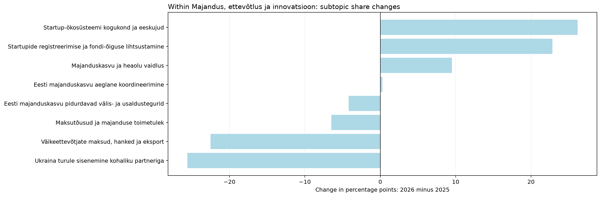
| jev_topic_id | jev_topic_name | jev_high_level_id | jev_high_level_name | minutes_2025 | minutes_2026 | segments_2025 | segments_2026 | talks_2025 | talks_2026 | time_share_2025 | segment_share_2025 | talk_coverage_2025 | assigned_time_share_2025 | time_share_2026 | segment_share_2026 | talk_coverage_2026 | assigned_time_share_2026 | time_share_delta_pp | segment_share_delta_pp | talk_coverage_delta_pp | assigned_time_share_delta_pp | status | supported_2026 | supported_2025 | within_parent_share_2025 | within_parent_share_2026 | within_parent_delta_pp | parent_scale_component_pp | within_parent_mix_component_pp |
|---|---|---|---|---|---|---|---|---|---|---|---|---|---|---|---|---|---|---|---|---|---|---|---|---|---|---|---|---|---|
| 22.0 | Ukraina turule sisenemine kohaliku partneriga | economy | Majandus, ettevõtlus ja innovatsioon | 80.25 | 0.00 | 15.0 | 0.0 | 3.0 | 0.0 | 0.81 | 0.70 | 2.63 | 0.87 | 0.00 | 0.00 | 0.00 | 0.00 | -0.81 | -0.70 | -2.63 | -0.87 | only_observed_2025 | False | True | 25.57 | 0.00 | -25.57 | -0.09 | -0.72 |
| 123.0 | Startupide registreerimise ja fondi-õiguse lihtsustamine | economy | Majandus, ettevõtlus ja innovatsioon | 0.00 | 58.54 | 0.0 | 11.0 | 0.0 | 2.0 | 0.00 | 0.00 | 0.00 | 0.00 | 0.64 | 0.56 | 1.90 | 0.68 | 0.64 | 0.56 | 1.90 | 0.68 | only_observed_2026 | True | False | 0.00 | 22.83 | 22.83 | -0.00 | 0.64 |
| 142.0 | Väikeettevõtjate maksud, hanked ja eksport | economy | Majandus, ettevõtlus ja innovatsioon | 74.66 | 3.26 | 14.0 | 2.0 | 5.0 | 2.0 | 0.75 | 0.65 | 4.39 | 0.81 | 0.04 | 0.10 | 1.90 | 0.04 | -0.72 | -0.55 | -2.48 | -0.77 | both_years | False | True | 23.79 | 1.27 | -22.52 | -0.09 | -0.63 |
| 157.0 | Startup-ökosüsteemi kogukond ja eeskujud | economy | Majandus, ettevõtlus ja innovatsioon | 9.21 | 74.62 | 2.0 | 18.0 | 2.0 | 3.0 | 0.09 | 0.09 | 1.75 | 0.10 | 0.82 | 0.91 | 2.86 | 0.86 | 0.72 | 0.82 | 1.10 | 0.76 | both_years | True | False | 2.93 | 29.10 | 26.16 | -0.01 | 0.73 |
| 169.0 | Majanduskasvu ja heaolu vaidlus | economy | Majandus, ettevõtlus ja innovatsioon | 52.27 | 67.11 | 12.0 | 16.0 | 9.0 | 3.0 | 0.53 | 0.56 | 7.89 | 0.57 | 0.73 | 0.81 | 2.86 | 0.77 | 0.21 | 0.25 | -5.04 | 0.21 | both_years | True | True | 16.66 | 26.17 | 9.51 | -0.06 | 0.27 |
| 174.0 | Maksutõusud ja majanduse toimetulek | economy | Majandus, ettevõtlus ja innovatsioon | 47.14 | 21.89 | 10.0 | 4.0 | 3.0 | 4.0 | 0.48 | 0.46 | 2.63 | 0.51 | 0.24 | 0.20 | 3.81 | 0.25 | -0.24 | -0.26 | 1.18 | -0.26 | both_years | True | True | 15.02 | 8.54 | -6.48 | -0.05 | -0.18 |
| 201.0 | Eesti majanduskasvu aeglane koordineerimine | economy | Majandus, ettevõtlus ja innovatsioon | 34.54 | 28.94 | 7.0 | 5.0 | 2.0 | 1.0 | 0.35 | 0.32 | 1.75 | 0.37 | 0.32 | 0.25 | 0.95 | 0.33 | -0.03 | -0.07 | -0.80 | -0.04 | both_years | False | True | 11.01 | 11.29 | 0.28 | -0.04 | 0.01 |
| 230.0 | Eesti majanduskasvu pidurdavad välis- ja usaldustegurid | economy | Majandus, ettevõtlus ja innovatsioon | 15.74 | 2.10 | 5.0 | 1.0 | 3.0 | 1.0 | 0.16 | 0.23 | 2.63 | 0.17 | 0.02 | 0.05 | 0.95 | 0.02 | -0.14 | -0.18 | -1.68 | -0.15 | both_years | False | True | 5.02 | 0.82 | -4.20 | -0.02 | -0.12 |
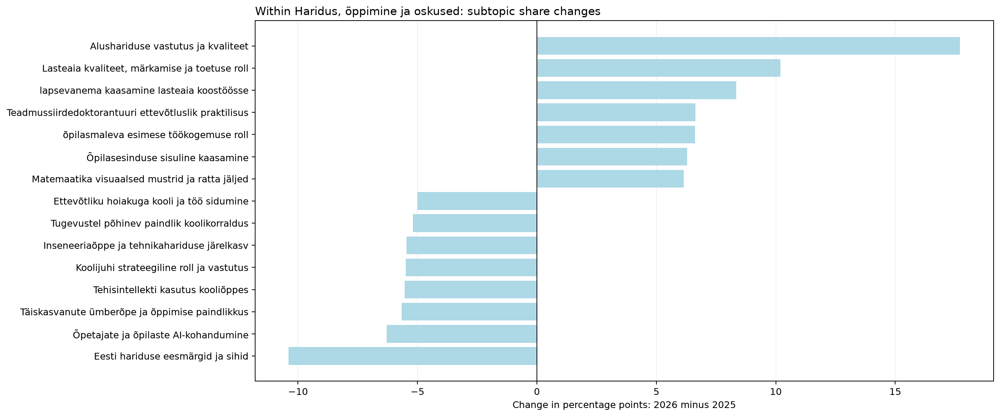
| jev_topic_id | jev_topic_name | jev_high_level_id | jev_high_level_name | minutes_2025 | minutes_2026 | segments_2025 | segments_2026 | talks_2025 | talks_2026 | time_share_2025 | segment_share_2025 | talk_coverage_2025 | assigned_time_share_2025 | time_share_2026 | segment_share_2026 | talk_coverage_2026 | assigned_time_share_2026 | time_share_delta_pp | segment_share_delta_pp | talk_coverage_delta_pp | assigned_time_share_delta_pp | status | supported_2026 | supported_2025 | within_parent_share_2025 | within_parent_share_2026 | within_parent_delta_pp | parent_scale_component_pp | within_parent_mix_component_pp |
|---|---|---|---|---|---|---|---|---|---|---|---|---|---|---|---|---|---|---|---|---|---|---|---|---|---|---|---|---|---|
| 4.0 | Lasteaia kvaliteet, märkamise ja toetuse roll | education | Haridus, õppimine ja oskused | 2.70 | 118.33 | 1.0 | 25.0 | 1.0 | 5.0 | 0.03 | 0.05 | 0.88 | 0.03 | 1.29 | 1.26 | 4.76 | 1.37 | 1.27 | 1.22 | 3.88 | 1.34 | both_years | True | False | 0.20 | 10.40 | 10.20 | -0.00 | 1.27 |
| 7.0 | Tagasiside ja hinde seos õppimisega | education | Haridus, õppimine ja oskused | 83.75 | 73.35 | 16.0 | 16.0 | 2.0 | 2.0 | 0.84 | 0.74 | 1.75 | 0.91 | 0.80 | 0.81 | 1.90 | 0.85 | -0.04 | 0.07 | 0.15 | -0.06 | both_years | True | True | 6.15 | 6.45 | 0.30 | -0.08 | 0.04 |
| 15.0 | lapsevanema kaasamine lasteaia koostöösse | education | Haridus, õppimine ja oskused | 0.00 | 95.00 | 0.0 | 18.0 | 0.0 | 3.0 | 0.00 | 0.00 | 0.00 | 0.00 | 1.04 | 0.91 | 2.86 | 1.10 | 1.04 | 0.91 | 2.86 | 1.10 | only_observed_2026 | True | False | 0.00 | 8.35 | 8.35 | -0.00 | 1.04 |
| 20.0 | Nutiseadmete kasutuse piiramine koolis | education | Haridus, õppimine ja oskused | 66.73 | 0.00 | 12.0 | 0.0 | 3.0 | 0.0 | 0.67 | 0.56 | 2.63 | 0.72 | 0.00 | 0.00 | 0.00 | 0.00 | -0.67 | -0.56 | -2.63 | -0.72 | only_observed_2025 | False | True | 4.90 | 0.00 | -4.90 | -0.06 | -0.61 |
| 23.0 | õpilasmaleva esimese töökogemuse roll | education | Haridus, õppimine ja oskused | 10.36 | 83.94 | 2.0 | 18.0 | 1.0 | 2.0 | 0.10 | 0.09 | 0.88 | 0.11 | 0.92 | 0.91 | 1.90 | 0.97 | 0.81 | 0.82 | 1.03 | 0.86 | both_years | True | False | 0.76 | 7.38 | 6.62 | -0.01 | 0.82 |
| 25.0 | Teadmussiirdedoktorantuuri ettevõtluslik praktilisus | education | Haridus, õppimine ja oskused | 16.40 | 89.25 | 4.0 | 16.0 | 2.0 | 3.0 | 0.17 | 0.19 | 1.75 | 0.18 | 0.98 | 0.81 | 2.86 | 1.03 | 0.81 | 0.62 | 1.10 | 0.85 | both_years | True | True | 1.20 | 7.84 | 6.64 | -0.02 | 0.83 |
| 28.0 | Täiskasvanute ümberõpe ja õppimise paindlikkus | education | Haridus, õppimine ja oskused | 77.17 | 0.00 | 16.0 | 0.0 | 2.0 | 0.0 | 0.78 | 0.74 | 1.75 | 0.84 | 0.00 | 0.00 | 0.00 | 0.00 | -0.78 | -0.74 | -1.75 | -0.84 | only_observed_2025 | False | True | 5.67 | 0.00 | -5.67 | -0.07 | -0.71 |
| 38.0 | eesti keele õppimine mitmekeelses koolis | education | Haridus, õppimine ja oskused | 58.29 | 2.28 | 12.0 | 1.0 | 2.0 | 1.0 | 0.59 | 0.56 | 1.75 | 0.63 | 0.02 | 0.05 | 0.95 | 0.03 | -0.56 | -0.51 | -0.80 | -0.61 | both_years | False | True | 4.28 | 0.20 | -4.08 | -0.05 | -0.51 |
| 53.0 | koolivõrgu koondamine ja juhtimisotsused | education | Haridus, õppimine ja oskused | 62.33 | 4.90 | 13.0 | 1.0 | 2.0 | 1.0 | 0.63 | 0.60 | 1.75 | 0.68 | 0.05 | 0.05 | 0.95 | 0.06 | -0.57 | -0.55 | -0.80 | -0.62 | both_years | False | True | 4.58 | 0.43 | -4.14 | -0.06 | -0.52 |
| 57.0 | Tugevustel põhinev paindlik koolikorraldus | education | Haridus, õppimine ja oskused | 70.75 | 0.00 | 13.0 | 0.0 | 1.0 | 0.0 | 0.71 | 0.60 | 0.88 | 0.77 | 0.00 | 0.00 | 0.00 | 0.00 | -0.71 | -0.60 | -0.88 | -0.77 | only_observed_2025 | False | False | 5.19 | 0.00 | -5.19 | -0.07 | -0.65 |
| 68.0 | Ettevõtliku hoiakuga kooli ja töö sidumine | education | Haridus, õppimine ja oskused | 74.50 | 5.34 | 14.0 | 1.0 | 3.0 | 1.0 | 0.75 | 0.65 | 2.63 | 0.81 | 0.06 | 0.05 | 0.95 | 0.06 | -0.69 | -0.60 | -1.68 | -0.75 | both_years | False | True | 5.47 | 0.47 | -5.00 | -0.07 | -0.62 |
| 70.0 | Õpiampsud töö- ja enesearengu osana | education | Haridus, õppimine ja oskused | 69.11 | 4.74 | 12.0 | 1.0 | 2.0 | 1.0 | 0.70 | 0.56 | 1.75 | 0.75 | 0.05 | 0.05 | 0.95 | 0.05 | -0.64 | -0.51 | -0.80 | -0.70 | both_years | False | True | 5.07 | 0.42 | -4.66 | -0.06 | -0.58 |
| 85.0 | Koolijuhi strateegiline roll ja vastutus | education | Haridus, õppimine ja oskused | 74.78 | 0.00 | 17.0 | 0.0 | 4.0 | 0.0 | 0.75 | 0.79 | 3.51 | 0.81 | 0.00 | 0.00 | 0.00 | 0.00 | -0.75 | -0.79 | -3.51 | -0.81 | only_observed_2025 | False | True | 5.49 | 0.00 | -5.49 | -0.07 | -0.68 |
| 88.0 | AI kasutamise reeglid ja hindamine ülikoolis | education | Haridus, õppimine ja oskused | 0.00 | 39.77 | 0.0 | 9.0 | 0.0 | 1.0 | 0.00 | 0.00 | 0.00 | 0.00 | 0.43 | 0.46 | 0.95 | 0.46 | 0.43 | 0.46 | 0.95 | 0.46 | only_observed_2026 | False | False | 0.00 | 3.49 | 3.49 | -0.00 | 0.43 |
| 98.0 | Vajaduspõhine tudengitoetus ja elamiskulud | education | Haridus, õppimine ja oskused | 22.46 | 31.33 | 6.0 | 5.0 | 2.0 | 1.0 | 0.23 | 0.28 | 1.75 | 0.24 | 0.34 | 0.25 | 0.95 | 0.36 | 0.12 | -0.03 | -0.80 | 0.12 | both_years | False | True | 1.65 | 2.75 | 1.10 | -0.02 | 0.14 |
| 107.0 | Fookuse hoidmise liikumismängud | education | Haridus, õppimine ja oskused | 0.00 | 42.83 | 0.0 | 9.0 | 0.0 | 1.0 | 0.00 | 0.00 | 0.00 | 0.00 | 0.47 | 0.46 | 0.95 | 0.49 | 0.47 | 0.46 | 0.95 | 0.49 | only_observed_2026 | False | False | 0.00 | 3.76 | 3.76 | -0.00 | 0.47 |
| 116.0 | Programmeerijaks saamise oskused ja praktikaotsing | education | Haridus, õppimine ja oskused | 49.65 | 0.00 | 11.0 | 0.0 | 2.0 | 0.0 | 0.50 | 0.51 | 1.75 | 0.54 | 0.00 | 0.00 | 0.00 | 0.00 | -0.50 | -0.51 | -1.75 | -0.54 | only_observed_2025 | False | True | 3.65 | 0.00 | -3.65 | -0.05 | -0.45 |
| 134.0 | Õpetaja Laura tulevikuõpetuse stsenaariumid | education | Haridus, õppimine ja oskused | 39.52 | 0.00 | 9.0 | 0.0 | 1.0 | 0.0 | 0.40 | 0.42 | 0.88 | 0.43 | 0.00 | 0.00 | 0.00 | 0.00 | -0.40 | -0.42 | -0.88 | -0.43 | only_observed_2025 | False | False | 2.90 | 0.00 | -2.90 | -0.04 | -0.36 |
| 135.0 | Õpilasesinduse sisuline kaasamine | education | Haridus, õppimine ja oskused | 0.00 | 71.63 | 0.0 | 13.0 | 0.0 | 1.0 | 0.00 | 0.00 | 0.00 | 0.00 | 0.78 | 0.66 | 0.95 | 0.83 | 0.78 | 0.66 | 0.95 | 0.83 | only_observed_2026 | False | False | 0.00 | 6.29 | 6.29 | -0.00 | 0.78 |
| 139.0 | Tehisaru mõju õppimisele ja hindamisele | education | Haridus, õppimine ja oskused | 77.25 | 37.75 | 15.0 | 7.0 | 4.0 | 5.0 | 0.78 | 0.70 | 3.51 | 0.84 | 0.41 | 0.35 | 4.76 | 0.44 | -0.37 | -0.34 | 1.25 | -0.40 | both_years | True | True | 5.67 | 3.32 | -2.35 | -0.07 | -0.29 |
| 141.0 | TalTechi energeetikaõpingud ja tööalane suund | education | Haridus, õppimine ja oskused | 41.70 | 0.00 | 9.0 | 0.0 | 2.0 | 0.0 | 0.42 | 0.42 | 1.75 | 0.45 | 0.00 | 0.00 | 0.00 | 0.00 | -0.42 | -0.42 | -1.75 | -0.45 | only_observed_2025 | False | True | 3.06 | 0.00 | -3.06 | -0.04 | -0.38 |
| 145.0 | Õpetajate ja õpilaste AI-kohandumine | education | Haridus, õppimine ja oskused | 97.32 | 9.71 | 19.0 | 2.0 | 5.0 | 2.0 | 0.98 | 0.88 | 4.39 | 1.06 | 0.11 | 0.10 | 1.90 | 0.11 | -0.87 | -0.78 | -2.48 | -0.94 | both_years | False | True | 7.14 | 0.85 | -6.29 | -0.09 | -0.78 |
| 146.0 | Inseneeriaõppe ja tehnikahariduse järelkasv | education | Haridus, õppimine ja oskused | 80.93 | 5.40 | 16.0 | 1.0 | 9.0 | 1.0 | 0.82 | 0.74 | 7.89 | 0.88 | 0.06 | 0.05 | 0.95 | 0.06 | -0.76 | -0.69 | -6.94 | -0.82 | both_years | False | True | 5.94 | 0.47 | -5.47 | -0.08 | -0.68 |
| 149.0 | tehisintellekti kirjutatud teadusartiklite usaldus ja hindamine | education | Haridus, õppimine ja oskused | 2.21 | 25.78 | 1.0 | 4.0 | 1.0 | 2.0 | 0.02 | 0.05 | 0.88 | 0.02 | 0.28 | 0.20 | 1.90 | 0.30 | 0.26 | 0.16 | 1.03 | 0.27 | both_years | True | False | 0.16 | 2.27 | 2.10 | -0.00 | 0.26 |
| 171.0 | Tehisintellekti kasutus kooliõppes | education | Haridus, õppimine ja oskused | 75.38 | 0.00 | 17.0 | 0.0 | 6.0 | 0.0 | 0.76 | 0.79 | 5.26 | 0.82 | 0.00 | 0.00 | 0.00 | 0.00 | -0.76 | -0.79 | -5.26 | -0.82 | only_observed_2025 | False | True | 5.53 | 0.00 | -5.53 | -0.07 | -0.69 |
| 172.0 | Alushariduse vastutus ja kvaliteet | education | Haridus, õppimine ja oskused | 0.00 | 201.50 | 0.0 | 42.0 | 0.0 | 7.0 | 0.00 | 0.00 | 0.00 | 0.00 | 2.20 | 2.12 | 6.67 | 2.33 | 2.20 | 2.12 | 6.67 | 2.33 | only_observed_2026 | True | False | 0.00 | 17.71 | 17.71 | -0.00 | 2.20 |
| 175.0 | Matemaatika visuaalsed mustrid ja ratta jäljed | education | Haridus, õppimine ja oskused | 0.00 | 69.94 | 0.0 | 12.0 | 0.0 | 2.0 | 0.00 | 0.00 | 0.00 | 0.00 | 0.76 | 0.61 | 1.90 | 0.81 | 0.76 | 0.61 | 1.90 | 0.81 | only_observed_2026 | True | False | 0.00 | 6.15 | 6.15 | -0.00 | 0.76 |
| 180.0 | Õpetaja hoituse rollid alushariduses | education | Haridus, õppimine ja oskused | 0.00 | 51.70 | 0.0 | 11.0 | 0.0 | 1.0 | 0.00 | 0.00 | 0.00 | 0.00 | 0.57 | 0.56 | 0.95 | 0.60 | 0.57 | 0.56 | 0.95 | 0.60 | only_observed_2026 | False | False | 0.00 | 4.54 | 4.54 | -0.00 | 0.57 |
| 188.0 | Inseneride nappus ja palga küsimus | education | Haridus, õppimine ja oskused | 12.40 | 8.69 | 4.0 | 1.0 | 3.0 | 1.0 | 0.12 | 0.19 | 2.63 | 0.13 | 0.10 | 0.05 | 0.95 | 0.10 | -0.03 | -0.14 | -1.68 | -0.03 | both_years | False | True | 0.91 | 0.76 | -0.15 | -0.01 | -0.02 |
| 190.0 | Eesti hariduse eesmärgid ja sihid | education | Haridus, õppimine ja oskused | 173.34 | 26.54 | 39.0 | 8.0 | 19.0 | 4.0 | 1.75 | 1.81 | 16.67 | 1.88 | 0.29 | 0.40 | 3.81 | 0.31 | -1.46 | -1.41 | -12.86 | -1.58 | both_years | True | True | 12.73 | 2.33 | -10.39 | -0.16 | -1.29 |
| 225.0 | hariduse tulevikuala arutelude tutvustus | education | Haridus, õppimine ja oskused | 23.10 | 1.56 | 8.0 | 1.0 | 5.0 | 1.0 | 0.23 | 0.37 | 4.39 | 0.25 | 0.02 | 0.05 | 0.95 | 0.02 | -0.22 | -0.32 | -3.43 | -0.23 | both_years | False | True | 1.70 | 0.14 | -1.56 | -0.02 | -0.19 |
| 229.0 | Üliõpilaste roll ja kõrghariduse ootused | education | Haridus, õppimine ja oskused | 0.00 | 36.79 | 0.0 | 8.0 | 0.0 | 2.0 | 0.00 | 0.00 | 0.00 | 0.00 | 0.40 | 0.40 | 1.90 | 0.42 | 0.40 | 0.40 | 1.90 | 0.42 | only_observed_2026 | True | False | 0.00 | 3.23 | 3.23 | -0.00 | 0.40 |
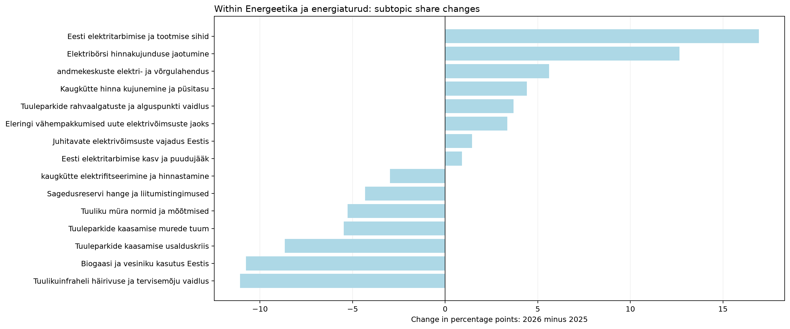
| jev_topic_id | jev_topic_name | jev_high_level_id | jev_high_level_name | minutes_2025 | minutes_2026 | segments_2025 | segments_2026 | talks_2025 | talks_2026 | time_share_2025 | segment_share_2025 | talk_coverage_2025 | assigned_time_share_2025 | time_share_2026 | segment_share_2026 | talk_coverage_2026 | assigned_time_share_2026 | time_share_delta_pp | segment_share_delta_pp | talk_coverage_delta_pp | assigned_time_share_delta_pp | status | supported_2026 | supported_2025 | within_parent_share_2025 | within_parent_share_2026 | within_parent_delta_pp | parent_scale_component_pp | within_parent_mix_component_pp |
|---|---|---|---|---|---|---|---|---|---|---|---|---|---|---|---|---|---|---|---|---|---|---|---|---|---|---|---|---|---|
| 17.0 | Biogaasi ja vesiniku kasutus Eestis | energy | Energeetika ja energiaturud | 93.45 | 28.63 | 19.0 | 7.0 | 4.0 | 6.0 | 0.94 | 0.88 | 3.51 | 1.01 | 0.31 | 0.35 | 5.71 | 0.33 | -0.63 | -0.53 | 2.21 | -0.68 | both_years | True | True | 15.94 | 5.18 | -10.76 | 0.02 | -0.65 |
| 75.0 | Tuuleparkide kaasamise usalduskriis | energy | Energeetika ja energiaturud | 58.19 | 7.01 | 13.0 | 2.0 | 1.0 | 2.0 | 0.59 | 0.60 | 0.88 | 0.63 | 0.08 | 0.10 | 1.90 | 0.08 | -0.51 | -0.50 | 1.03 | -0.55 | both_years | False | False | 9.92 | 1.27 | -8.66 | 0.01 | -0.52 |
| 117.0 | Kaugkütte hinna kujunemine ja püsitasu | energy | Energeetika ja energiaturud | 16.31 | 39.82 | 3.0 | 8.0 | 1.0 | 1.0 | 0.16 | 0.14 | 0.88 | 0.18 | 0.44 | 0.40 | 0.95 | 0.46 | 0.27 | 0.27 | 0.08 | 0.28 | both_years | False | False | 2.78 | 7.20 | 4.42 | 0.00 | 0.27 |
| 127.0 | Elektribörsi hinnakujunduse jaotumine | energy | Energeetika ja energiaturud | 4.79 | 74.51 | 1.0 | 15.0 | 1.0 | 3.0 | 0.05 | 0.05 | 0.88 | 0.05 | 0.81 | 0.76 | 2.86 | 0.86 | 0.77 | 0.71 | 1.98 | 0.81 | both_years | True | False | 0.82 | 13.47 | 12.65 | 0.00 | 0.77 |
| 132.0 | Eesti elektritarbimise ja tootmise sihid | energy | Energeetika ja energiaturud | 26.45 | 118.64 | 5.0 | 24.0 | 4.0 | 7.0 | 0.27 | 0.23 | 3.51 | 0.29 | 1.30 | 1.21 | 6.67 | 1.37 | 1.03 | 0.98 | 3.16 | 1.08 | both_years | True | True | 4.51 | 21.45 | 16.94 | 0.01 | 1.02 |
| 156.0 | Meretuuleparkide arendamise kindlustamine | energy | Energeetika ja energiaturud | 14.19 | 10.61 | 3.0 | 2.0 | 1.0 | 1.0 | 0.14 | 0.14 | 0.88 | 0.15 | 0.12 | 0.10 | 0.95 | 0.12 | -0.03 | -0.04 | 0.08 | -0.03 | both_years | False | False | 2.42 | 1.92 | -0.50 | 0.00 | -0.03 |
| 160.0 | Juhitavate elektrivõimsuste vajadus Eestis | energy | Energeetika ja energiaturud | 101.73 | 103.98 | 22.0 | 16.0 | 3.0 | 4.0 | 1.03 | 1.02 | 2.63 | 1.10 | 1.14 | 0.81 | 3.81 | 1.20 | 0.11 | -0.21 | 1.18 | 0.10 | both_years | True | True | 17.35 | 18.80 | 1.45 | 0.02 | 0.09 |
| 181.0 | Eesti elektritarbimise kasv ja puudujääk | energy | Energeetika ja energiaturud | 12.01 | 16.39 | 2.0 | 4.0 | 2.0 | 3.0 | 0.12 | 0.09 | 1.75 | 0.13 | 0.18 | 0.20 | 2.86 | 0.19 | 0.06 | 0.11 | 1.10 | 0.06 | both_years | True | True | 2.05 | 2.96 | 0.91 | 0.00 | 0.06 |
| 194.0 | andmekeskuste elektri- ja võrgulahendus | energy | Energeetika ja energiaturud | 0.00 | 31.06 | 0.0 | 5.0 | 0.0 | 3.0 | 0.00 | 0.00 | 0.00 | 0.00 | 0.34 | 0.25 | 2.86 | 0.36 | 0.34 | 0.25 | 2.86 | 0.36 | only_observed_2026 | True | False | 0.00 | 5.61 | 5.61 | 0.00 | 0.34 |
| 198.0 | Tuulikuinfraheli häirivuse ja tervisemõju vaidlus | energy | Energeetika ja energiaturud | 67.28 | 2.21 | 18.0 | 1.0 | 2.0 | 1.0 | 0.68 | 0.84 | 1.75 | 0.73 | 0.02 | 0.05 | 0.95 | 0.03 | -0.65 | -0.79 | -0.80 | -0.70 | both_years | False | True | 11.47 | 0.40 | -11.07 | 0.02 | -0.67 |
| 211.0 | Tuuleparkide kaasamise murede tuum | energy | Energeetika ja energiaturud | 68.63 | 34.44 | 17.0 | 8.0 | 6.0 | 3.0 | 0.69 | 0.79 | 5.26 | 0.74 | 0.38 | 0.40 | 2.86 | 0.40 | -0.31 | -0.38 | -2.41 | -0.35 | both_years | True | True | 11.70 | 6.23 | -5.48 | 0.02 | -0.33 |
| 212.0 | kaugkütte elektrifitseerimine ja hinnastamine | energy | Energeetika ja energiaturud | 55.69 | 36.03 | 10.0 | 7.0 | 2.0 | 2.0 | 0.56 | 0.46 | 1.75 | 0.60 | 0.39 | 0.35 | 1.90 | 0.42 | -0.17 | -0.11 | 0.15 | -0.19 | both_years | True | True | 9.50 | 6.51 | -2.98 | 0.01 | -0.18 |
| 213.0 | Tuuliku müra normid ja mõõtmised | energy | Energeetika ja energiaturud | 30.89 | 0.00 | 8.0 | 0.0 | 1.0 | 0.0 | 0.31 | 0.37 | 0.88 | 0.34 | 0.00 | 0.00 | 0.00 | 0.00 | -0.31 | -0.37 | -0.88 | -0.34 | only_observed_2025 | False | False | 5.27 | 0.00 | -5.27 | 0.01 | -0.32 |
| 223.0 | Eleringi vähempakkumised uute elektrivõimsuste jaoks | energy | Energeetika ja energiaturud | 3.84 | 22.16 | 1.0 | 7.0 | 1.0 | 3.0 | 0.04 | 0.05 | 0.88 | 0.04 | 0.24 | 0.35 | 2.86 | 0.26 | 0.20 | 0.31 | 1.98 | 0.21 | both_years | True | False | 0.65 | 4.01 | 3.35 | 0.00 | 0.20 |
| 224.0 | Sagedusreservi hange ja liitumistingimused | energy | Energeetika ja energiaturud | 32.94 | 7.19 | 6.0 | 2.0 | 2.0 | 2.0 | 0.33 | 0.28 | 1.75 | 0.36 | 0.08 | 0.10 | 1.90 | 0.08 | -0.25 | -0.18 | 0.15 | -0.27 | both_years | False | True | 5.62 | 1.30 | -4.32 | 0.01 | -0.26 |
| 235.0 | Tuuleparkide rahvaalgatuste ja alguspunkti vaidlus | energy | Energeetika ja energiaturud | 0.00 | 20.46 | 0.0 | 4.0 | 0.0 | 1.0 | 0.00 | 0.00 | 0.00 | 0.00 | 0.22 | 0.20 | 0.95 | 0.24 | 0.22 | 0.20 | 0.95 | 0.24 | only_observed_2026 | False | False | 0.00 | 3.70 | 3.70 | 0.00 | 0.22 |
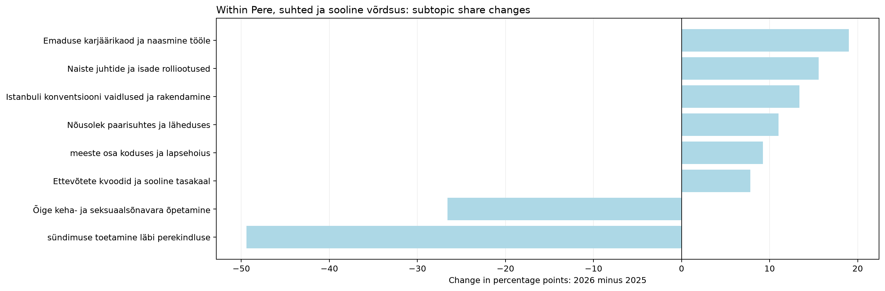
| jev_topic_id | jev_topic_name | jev_high_level_id | jev_high_level_name | minutes_2025 | minutes_2026 | segments_2025 | segments_2026 | talks_2025 | talks_2026 | time_share_2025 | segment_share_2025 | talk_coverage_2025 | assigned_time_share_2025 | time_share_2026 | segment_share_2026 | talk_coverage_2026 | assigned_time_share_2026 | time_share_delta_pp | segment_share_delta_pp | talk_coverage_delta_pp | assigned_time_share_delta_pp | status | supported_2026 | supported_2025 | within_parent_share_2025 | within_parent_share_2026 | within_parent_delta_pp | parent_scale_component_pp | within_parent_mix_component_pp |
|---|---|---|---|---|---|---|---|---|---|---|---|---|---|---|---|---|---|---|---|---|---|---|---|---|---|---|---|---|---|
| 10.0 | Nõusolek paarisuhtes ja läheduses | family | Pere, suhted ja sooline võrdsus | 15.70 | 84.48 | 3.0 | 17.0 | 1.0 | 1.0 | 0.16 | 0.14 | 0.88 | 0.17 | 0.92 | 0.86 | 0.95 | 0.98 | 0.77 | 0.72 | 0.08 | 0.80 | both_years | False | False | 8.55 | 19.56 | 11.01 | 0.25 | 0.52 |
| 12.0 | sündimuse toetamine läbi perekindluse | family | Pere, suhted ja sooline võrdsus | 92.18 | 3.26 | 16.0 | 2.0 | 2.0 | 1.0 | 0.93 | 0.74 | 1.75 | 1.00 | 0.04 | 0.10 | 0.95 | 0.04 | -0.89 | -0.64 | -0.80 | -0.96 | both_years | False | True | 50.18 | 0.76 | -49.43 | 1.44 | -2.34 |
| 13.0 | Emaduse karjäärikaod ja naasmine tööle | family | Pere, suhted ja sooline võrdsus | 2.64 | 88.32 | 1.0 | 18.0 | 1.0 | 3.0 | 0.03 | 0.05 | 0.88 | 0.03 | 0.97 | 0.91 | 2.86 | 1.02 | 0.94 | 0.86 | 1.98 | 0.99 | both_years | True | False | 1.44 | 20.45 | 19.01 | 0.04 | 0.90 |
| 40.0 | Õige keha- ja seksuaalsõnavara õpetamine | family | Pere, suhted ja sooline võrdsus | 49.54 | 1.63 | 10.0 | 1.0 | 1.0 | 1.0 | 0.50 | 0.46 | 0.88 | 0.54 | 0.02 | 0.05 | 0.95 | 0.02 | -0.48 | -0.41 | 0.08 | -0.52 | both_years | False | False | 26.97 | 0.38 | -26.59 | 0.77 | -1.26 |
| 54.0 | Istanbuli konventsiooni vaidlused ja rakendamine | family | Pere, suhted ja sooline võrdsus | 13.33 | 89.12 | 2.0 | 18.0 | 1.0 | 1.0 | 0.13 | 0.09 | 0.88 | 0.14 | 0.97 | 0.91 | 0.95 | 1.03 | 0.84 | 0.82 | 0.08 | 0.88 | both_years | False | False | 7.26 | 20.63 | 13.38 | 0.21 | 0.63 |
| 150.0 | Naiste juhtide ja isade rolliootused | family | Pere, suhted ja sooline võrdsus | 3.79 | 76.21 | 2.0 | 17.0 | 2.0 | 3.0 | 0.04 | 0.09 | 1.75 | 0.04 | 0.83 | 0.86 | 2.86 | 0.88 | 0.80 | 0.77 | 1.10 | 0.84 | both_years | True | False | 2.06 | 17.64 | 15.58 | 0.06 | 0.74 |
| 173.0 | Ettevõtete kvoodid ja sooline tasakaal | family | Pere, suhted ja sooline võrdsus | 0.00 | 33.67 | 0.0 | 7.0 | 0.0 | 2.0 | 0.00 | 0.00 | 0.00 | 0.00 | 0.37 | 0.35 | 1.90 | 0.39 | 0.37 | 0.35 | 1.90 | 0.39 | only_observed_2026 | True | False | 0.00 | 7.80 | 7.80 | 0.00 | 0.37 |
| 185.0 | meeste osa koduses ja lapsehoius | family | Pere, suhted ja sooline võrdsus | 6.52 | 55.25 | 3.0 | 12.0 | 1.0 | 2.0 | 0.07 | 0.14 | 0.88 | 0.07 | 0.60 | 0.61 | 1.90 | 0.64 | 0.54 | 0.47 | 1.03 | 0.57 | both_years | True | False | 3.55 | 12.79 | 9.24 | 0.10 | 0.44 |
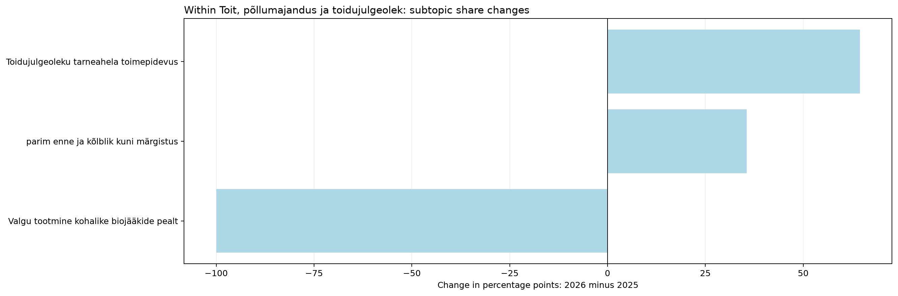
| jev_topic_id | jev_topic_name | jev_high_level_id | jev_high_level_name | minutes_2025 | minutes_2026 | segments_2025 | segments_2026 | talks_2025 | talks_2026 | time_share_2025 | segment_share_2025 | talk_coverage_2025 | assigned_time_share_2025 | time_share_2026 | segment_share_2026 | talk_coverage_2026 | assigned_time_share_2026 | time_share_delta_pp | segment_share_delta_pp | talk_coverage_delta_pp | assigned_time_share_delta_pp | status | supported_2026 | supported_2025 | within_parent_share_2025 | within_parent_share_2026 | within_parent_delta_pp | parent_scale_component_pp | within_parent_mix_component_pp |
|---|---|---|---|---|---|---|---|---|---|---|---|---|---|---|---|---|---|---|---|---|---|---|---|---|---|---|---|---|---|
| 48.0 | Toidujulgeoleku tarneahela toimepidevus | food | Toit, põllumajandus ja toidujulgeolek | 0.00 | 96.51 | 0.0 | 21.0 | 0.0 | 4.0 | 0.00 | 0.00 | 0.00 | 0.00 | 1.06 | 1.06 | 3.81 | 1.11 | 1.06 | 1.06 | 3.81 | 1.11 | only_observed_2026 | True | False | 0.0 | 64.47 | 64.47 | 0.00 | 1.06 |
| 51.0 | parim enne ja kõlblik kuni märgistus | food | Toit, põllumajandus ja toidujulgeolek | 0.00 | 53.19 | 0.0 | 13.0 | 0.0 | 1.0 | 0.00 | 0.00 | 0.00 | 0.00 | 0.58 | 0.66 | 0.95 | 0.61 | 0.58 | 0.66 | 0.95 | 0.61 | only_observed_2026 | False | False | 0.0 | 35.53 | 35.53 | 0.00 | 0.58 |
| 222.0 | Valgu tootmine kohalike biojääkide pealt | food | Toit, põllumajandus ja toidujulgeolek | 22.76 | 0.00 | 5.0 | 0.0 | 2.0 | 0.0 | 0.23 | 0.23 | 1.75 | 0.25 | 0.00 | 0.00 | 0.00 | 0.00 | -0.23 | -0.23 | -1.75 | -0.25 | only_observed_2025 | False | True | 100.0 | 0.00 | -100.00 | 1.41 | -1.64 |
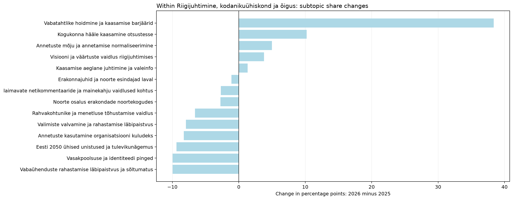
| jev_topic_id | jev_topic_name | jev_high_level_id | jev_high_level_name | minutes_2025 | minutes_2026 | segments_2025 | segments_2026 | talks_2025 | talks_2026 | time_share_2025 | segment_share_2025 | talk_coverage_2025 | assigned_time_share_2025 | time_share_2026 | segment_share_2026 | talk_coverage_2026 | assigned_time_share_2026 | time_share_delta_pp | segment_share_delta_pp | talk_coverage_delta_pp | assigned_time_share_delta_pp | status | supported_2026 | supported_2025 | within_parent_share_2025 | within_parent_share_2026 | within_parent_delta_pp | parent_scale_component_pp | within_parent_mix_component_pp |
|---|---|---|---|---|---|---|---|---|---|---|---|---|---|---|---|---|---|---|---|---|---|---|---|---|---|---|---|---|---|
| 31.0 | Valimiste valvamine ja rahastamise läbipaistvus | governance | Riigijuhtimine, kodanikuühiskond ja õigus | 73.62 | 0.00 | 17.0 | 0.0 | 2.0 | 0.0 | 0.74 | 0.79 | 1.75 | 0.80 | 0.00 | 0.00 | 0.00 | 0.00 | -0.74 | -0.79 | -1.75 | -0.80 | only_observed_2025 | False | True | 7.95 | 0.00 | -7.95 | -0.60 | -0.14 |
| 33.0 | Kogukonna hääle kaasamine otsustesse | governance | Riigijuhtimine, kodanikuühiskond ja õigus | 59.43 | 26.61 | 13.0 | 6.0 | 8.0 | 5.0 | 0.60 | 0.60 | 7.02 | 0.65 | 0.29 | 0.30 | 4.76 | 0.31 | -0.31 | -0.30 | -2.26 | -0.34 | both_years | True | True | 6.42 | 16.63 | 10.22 | -0.49 | 0.18 |
| 34.0 | Vabaühenduste rahastamise läbipaistvus ja sõltumatus | governance | Riigijuhtimine, kodanikuühiskond ja õigus | 92.40 | 0.00 | 20.0 | 0.0 | 2.0 | 0.0 | 0.93 | 0.93 | 1.75 | 1.00 | 0.00 | 0.00 | 0.00 | 0.00 | -0.93 | -0.93 | -1.75 | -1.00 | only_observed_2025 | False | True | 9.98 | 0.00 | -9.98 | -0.76 | -0.17 |
| 35.0 | Rahvakohtunike ja menetluse tõhustamise vaidlus | governance | Riigijuhtimine, kodanikuühiskond ja õigus | 61.00 | 0.00 | 14.0 | 0.0 | 1.0 | 0.0 | 0.61 | 0.65 | 0.88 | 0.66 | 0.00 | 0.00 | 0.00 | 0.00 | -0.61 | -0.65 | -0.88 | -0.66 | only_observed_2025 | False | False | 6.59 | 0.00 | -6.59 | -0.50 | -0.12 |
| 39.0 | Vasakpoolsuse ja identiteedi pinged | governance | Riigijuhtimine, kodanikuühiskond ja õigus | 92.21 | 0.00 | 19.0 | 0.0 | 2.0 | 0.0 | 0.93 | 0.88 | 1.75 | 1.00 | 0.00 | 0.00 | 0.00 | 0.00 | -0.93 | -0.88 | -1.75 | -1.00 | only_observed_2025 | False | True | 9.96 | 0.00 | -9.96 | -0.76 | -0.17 |
| 46.0 | laimavate netikommentaaride ja mainekahju vaidlused kohtus | governance | Riigijuhtimine, kodanikuühiskond ja õigus | 91.16 | 11.41 | 20.0 | 3.0 | 1.0 | 1.0 | 0.92 | 0.93 | 0.88 | 0.99 | 0.12 | 0.15 | 0.95 | 0.13 | -0.79 | -0.78 | 0.08 | -0.86 | both_years | False | False | 9.84 | 7.13 | -2.71 | -0.75 | -0.05 |
| 50.0 | Annetuste kasutamine organisatsiooni kuludeks | governance | Riigijuhtimine, kodanikuühiskond ja õigus | 76.58 | 0.00 | 14.0 | 0.0 | 2.0 | 0.0 | 0.77 | 0.65 | 1.75 | 0.83 | 0.00 | 0.00 | 0.00 | 0.00 | -0.77 | -0.65 | -1.75 | -0.83 | only_observed_2025 | False | True | 8.27 | 0.00 | -8.27 | -0.63 | -0.14 |
| 64.0 | Eesti 2050 ühised unistused ja tulevikunägemus | governance | Riigijuhtimine, kodanikuühiskond ja õigus | 106.47 | 3.36 | 20.0 | 1.0 | 6.0 | 1.0 | 1.07 | 0.93 | 5.26 | 1.16 | 0.04 | 0.05 | 0.95 | 0.04 | -1.04 | -0.88 | -4.31 | -1.12 | both_years | False | True | 11.49 | 2.10 | -9.39 | -0.87 | -0.16 |
| 118.0 | Visiooni ja väärtuste vaidlus riigijuhtimises | governance | Riigijuhtimine, kodanikuühiskond ja õigus | 94.65 | 22.41 | 17.0 | 4.0 | 7.0 | 4.0 | 0.95 | 0.79 | 6.14 | 1.03 | 0.25 | 0.20 | 3.81 | 0.26 | -0.71 | -0.59 | -2.33 | -0.77 | both_years | True | True | 10.22 | 14.01 | 3.79 | -0.78 | 0.07 |
| 128.0 | Annetuste mõju ja annetamise normaliseerimine | governance | Riigijuhtimine, kodanikuühiskond ja õigus | 97.99 | 24.93 | 22.0 | 5.0 | 3.0 | 3.0 | 0.99 | 1.02 | 2.63 | 1.06 | 0.27 | 0.25 | 2.86 | 0.29 | -0.71 | -0.77 | 0.23 | -0.78 | both_years | True | True | 10.58 | 15.58 | 5.00 | -0.80 | 0.09 |
| 147.0 | Noorte osalus erakondade noortekogudes | governance | Riigijuhtimine, kodanikuühiskond ja õigus | 25.55 | 0.00 | 6.0 | 0.0 | 2.0 | 0.0 | 0.26 | 0.28 | 1.75 | 0.28 | 0.00 | 0.00 | 0.00 | 0.00 | -0.26 | -0.28 | -1.75 | -0.28 | only_observed_2025 | False | True | 2.76 | 0.00 | -2.76 | -0.21 | -0.05 |
| 159.0 | Vabatahtlike hoidmine ja kaasamise barjäärid | governance | Riigijuhtimine, kodanikuühiskond ja õigus | 7.18 | 62.62 | 2.0 | 11.0 | 2.0 | 1.0 | 0.07 | 0.09 | 1.75 | 0.08 | 0.68 | 0.56 | 0.95 | 0.72 | 0.61 | 0.46 | -0.80 | 0.65 | both_years | False | False | 0.78 | 39.14 | 38.36 | -0.06 | 0.67 |
| 217.0 | Erakonnajuhid ja noorte esindajad laval | governance | Riigijuhtimine, kodanikuühiskond ja õigus | 19.71 | 1.62 | 6.0 | 1.0 | 3.0 | 1.0 | 0.20 | 0.28 | 2.63 | 0.21 | 0.02 | 0.05 | 0.95 | 0.02 | -0.18 | -0.23 | -1.68 | -0.20 | both_years | False | True | 2.13 | 1.01 | -1.12 | -0.16 | -0.02 |
| 233.0 | Kaasamise aeglane juhtimine ja valeinfo | governance | Riigijuhtimine, kodanikuühiskond ja õigus | 28.32 | 7.04 | 4.0 | 1.0 | 2.0 | 1.0 | 0.29 | 0.19 | 1.75 | 0.31 | 0.08 | 0.05 | 0.95 | 0.08 | -0.21 | -0.14 | -0.80 | -0.23 | both_years | False | True | 3.06 | 4.40 | 1.34 | -0.23 | 0.02 |
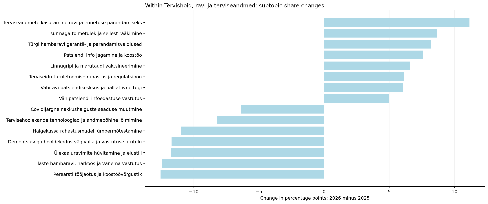
| jev_topic_id | jev_topic_name | jev_high_level_id | jev_high_level_name | minutes_2025 | minutes_2026 | segments_2025 | segments_2026 | talks_2025 | talks_2026 | time_share_2025 | segment_share_2025 | talk_coverage_2025 | assigned_time_share_2025 | time_share_2026 | segment_share_2026 | talk_coverage_2026 | assigned_time_share_2026 | time_share_delta_pp | segment_share_delta_pp | talk_coverage_delta_pp | assigned_time_share_delta_pp | status | supported_2026 | supported_2025 | within_parent_share_2025 | within_parent_share_2026 | within_parent_delta_pp | parent_scale_component_pp | within_parent_mix_component_pp |
|---|---|---|---|---|---|---|---|---|---|---|---|---|---|---|---|---|---|---|---|---|---|---|---|---|---|---|---|---|---|
| 2.0 | Vähiravi patsiendikesksus ja palliatiivne tugi | healthcare | Tervishoid, ravi ja terviseandmed | 16.00 | 82.55 | 2.0 | 17.0 | 1.0 | 4.0 | 0.16 | 0.09 | 0.88 | 0.17 | 0.90 | 0.86 | 3.81 | 0.95 | 0.74 | 0.77 | 2.93 | 0.78 | both_years | True | False | 2.35 | 8.39 | 6.04 | 0.09 | 0.65 |
| 30.0 | laste hambaravi, narkoos ja vanema vastutus | healthcare | Tervishoid, ravi ja terviseandmed | 84.28 | 0.00 | 20.0 | 0.0 | 1.0 | 0.0 | 0.85 | 0.93 | 0.88 | 0.91 | 0.00 | 0.00 | 0.00 | 0.00 | -0.85 | -0.93 | -0.88 | -0.91 | only_observed_2025 | False | False | 12.40 | 0.00 | -12.40 | 0.48 | -1.33 |
| 47.0 | Ülekaaluravimite hüvitamine ja elustiil | healthcare | Tervishoid, ravi ja terviseandmed | 79.57 | 0.00 | 18.0 | 0.0 | 1.0 | 0.0 | 0.80 | 0.84 | 0.88 | 0.86 | 0.00 | 0.00 | 0.00 | 0.00 | -0.80 | -0.84 | -0.88 | -0.86 | only_observed_2025 | False | False | 11.71 | 0.00 | -11.71 | 0.46 | -1.26 |
| 58.0 | Türgi hambaravi garantii- ja parandamisvaidlused | healthcare | Tervishoid, ravi ja terviseandmed | 0.00 | 80.82 | 0.0 | 17.0 | 0.0 | 1.0 | 0.00 | 0.00 | 0.00 | 0.00 | 0.88 | 0.86 | 0.95 | 0.93 | 0.88 | 0.86 | 0.95 | 0.93 | only_observed_2026 | False | False | 0.00 | 8.22 | 8.22 | 0.00 | 0.88 |
| 67.0 | Perearsti tööjaotus ja koostöövõrgustik | healthcare | Tervishoid, ravi ja terviseandmed | 94.65 | 13.63 | 21.0 | 3.0 | 4.0 | 1.0 | 0.95 | 0.97 | 3.51 | 1.03 | 0.15 | 0.15 | 0.95 | 0.16 | -0.80 | -0.82 | -2.56 | -0.87 | both_years | False | True | 13.93 | 1.39 | -12.54 | 0.54 | -1.35 |
| 84.0 | surmaga toimetulek ja sellest rääkimine | healthcare | Tervishoid, ravi ja terviseandmed | 6.21 | 94.29 | 2.0 | 20.0 | 1.0 | 3.0 | 0.06 | 0.09 | 0.88 | 0.07 | 1.03 | 1.01 | 2.86 | 1.09 | 0.97 | 0.92 | 1.98 | 1.02 | both_years | True | False | 0.91 | 9.58 | 8.67 | 0.04 | 0.93 |
| 89.0 | Dementsusega hooldekodus vägivalla ja vastutuse arutelu | healthcare | Tervishoid, ravi ja terviseandmed | 79.46 | 0.00 | 14.0 | 0.0 | 1.0 | 0.0 | 0.80 | 0.65 | 0.88 | 0.86 | 0.00 | 0.00 | 0.00 | 0.00 | -0.80 | -0.65 | -0.88 | -0.86 | only_observed_2025 | False | False | 11.69 | 0.00 | -11.69 | 0.46 | -1.26 |
| 105.0 | Linnugripi ja marutaudi vaktsineerimine | healthcare | Tervishoid, ravi ja terviseandmed | 0.00 | 64.92 | 0.0 | 12.0 | 0.0 | 1.0 | 0.00 | 0.00 | 0.00 | 0.00 | 0.71 | 0.61 | 0.95 | 0.75 | 0.71 | 0.61 | 0.95 | 0.75 | only_observed_2026 | False | False | 0.00 | 6.60 | 6.60 | 0.00 | 0.71 |
| 115.0 | Patsiendi info jagamine ja koostöö | healthcare | Tervishoid, ravi ja terviseandmed | 37.20 | 128.64 | 8.0 | 24.0 | 4.0 | 5.0 | 0.37 | 0.37 | 3.51 | 0.40 | 1.41 | 1.21 | 4.76 | 1.49 | 1.03 | 0.84 | 1.25 | 1.08 | both_years | True | True | 5.47 | 13.08 | 7.60 | 0.21 | 0.82 |
| 131.0 | Haigekassa rahastusmudeli ümbermõtestamine | healthcare | Tervishoid, ravi ja terviseandmed | 83.45 | 13.03 | 17.0 | 3.0 | 3.0 | 3.0 | 0.84 | 0.79 | 2.63 | 0.91 | 0.14 | 0.15 | 2.86 | 0.15 | -0.70 | -0.64 | 0.23 | -0.76 | both_years | True | True | 12.28 | 1.32 | -10.95 | 0.48 | -1.18 |
| 137.0 | AI roll arstide suhtluses ja vähiravis | healthcare | Tervishoid, ravi ja terviseandmed | 7.53 | 58.14 | 1.0 | 12.0 | 1.0 | 3.0 | 0.08 | 0.05 | 0.88 | 0.08 | 0.64 | 0.61 | 2.86 | 0.67 | 0.56 | 0.56 | 1.98 | 0.59 | both_years | True | False | 1.11 | 5.91 | 4.80 | 0.04 | 0.52 |
| 143.0 | Terviseidu turuletoomise rahastus ja regulatsioon | healthcare | Tervishoid, ravi ja terviseandmed | 13.68 | 79.73 | 4.0 | 17.0 | 2.0 | 3.0 | 0.14 | 0.19 | 1.75 | 0.15 | 0.87 | 0.86 | 2.86 | 0.92 | 0.73 | 0.67 | 1.10 | 0.77 | both_years | True | True | 2.01 | 8.10 | 6.09 | 0.08 | 0.66 |
| 151.0 | Tervishoiu konkurentsi tasakaal | healthcare | Tervishoid, ravi ja terviseandmed | 10.35 | 58.48 | 2.0 | 11.0 | 1.0 | 2.0 | 0.10 | 0.09 | 0.88 | 0.11 | 0.64 | 0.56 | 1.90 | 0.68 | 0.54 | 0.46 | 1.03 | 0.56 | both_years | True | False | 1.52 | 5.94 | 4.42 | 0.06 | 0.48 |
| 153.0 | Vähipatsiendi infoedastuse vastutus | healthcare | Tervishoid, ravi ja terviseandmed | 3.18 | 53.75 | 1.0 | 11.0 | 1.0 | 2.0 | 0.03 | 0.05 | 0.88 | 0.03 | 0.59 | 0.56 | 1.90 | 0.62 | 0.56 | 0.51 | 1.03 | 0.59 | both_years | True | False | 0.47 | 5.46 | 5.00 | 0.02 | 0.54 |
| 179.0 | Covidijärgne nakkushaiguste seaduse muutmine | healthcare | Tervishoid, ravi ja terviseandmed | 47.41 | 6.01 | 6.0 | 1.0 | 2.0 | 1.0 | 0.48 | 0.28 | 1.75 | 0.51 | 0.07 | 0.05 | 0.95 | 0.07 | -0.41 | -0.23 | -0.80 | -0.45 | both_years | False | True | 6.97 | 0.61 | -6.36 | 0.27 | -0.68 |
| 182.0 | terviseandmete kasutus ja eetikakomitee loa takistused | healthcare | Tervishoid, ravi ja terviseandmed | 5.51 | 28.12 | 2.0 | 6.0 | 1.0 | 4.0 | 0.06 | 0.09 | 0.88 | 0.06 | 0.31 | 0.30 | 3.81 | 0.32 | 0.25 | 0.21 | 2.93 | 0.26 | both_years | True | False | 0.81 | 2.86 | 2.05 | 0.03 | 0.22 |
| 195.0 | Tervisehoolekande tehnoloogiad ja andmepõhine lõimimine | healthcare | Tervishoid, ravi ja terviseandmed | 72.04 | 23.25 | 15.0 | 9.0 | 5.0 | 6.0 | 0.73 | 0.70 | 4.39 | 0.78 | 0.25 | 0.46 | 5.71 | 0.27 | -0.47 | -0.24 | 1.33 | -0.51 | both_years | True | True | 10.60 | 2.36 | -8.24 | 0.41 | -0.89 |
| 204.0 | Terviseandmete kasutamine ravi ja ennetuse parandamiseks | healthcare | Tervishoid, ravi ja terviseandmed | 8.76 | 122.28 | 2.0 | 26.0 | 2.0 | 4.0 | 0.09 | 0.09 | 1.75 | 0.10 | 1.34 | 1.31 | 3.81 | 1.41 | 1.25 | 1.22 | 2.06 | 1.32 | both_years | True | False | 1.29 | 12.43 | 11.14 | 0.05 | 1.20 |
| 208.0 | Tulemuspõhine tervishoiurahastus ja kaugjälgimine | healthcare | Tervishoid, ravi ja terviseandmed | 12.36 | 46.57 | 2.0 | 12.0 | 1.0 | 4.0 | 0.12 | 0.09 | 0.88 | 0.13 | 0.51 | 0.61 | 3.81 | 0.54 | 0.38 | 0.51 | 2.93 | 0.40 | both_years | True | False | 1.82 | 4.73 | 2.91 | 0.07 | 0.31 |
| 226.0 | raviraha jaotamine patsiendiga kaasa | healthcare | Tervishoid, ravi ja terviseandmed | 18.06 | 29.62 | 4.0 | 5.0 | 2.0 | 1.0 | 0.18 | 0.19 | 1.75 | 0.20 | 0.32 | 0.25 | 0.95 | 0.34 | 0.14 | 0.07 | -0.80 | 0.15 | both_years | False | True | 2.66 | 3.01 | 0.35 | 0.10 | 0.04 |
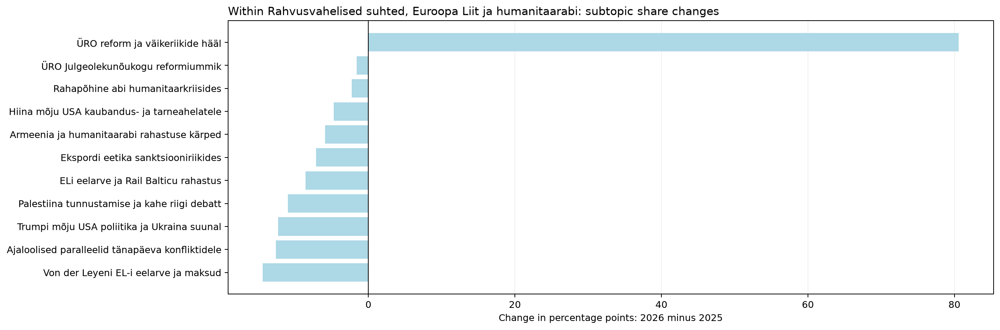
| jev_topic_id | jev_topic_name | jev_high_level_id | jev_high_level_name | minutes_2025 | minutes_2026 | segments_2025 | segments_2026 | talks_2025 | talks_2026 | time_share_2025 | segment_share_2025 | talk_coverage_2025 | assigned_time_share_2025 | time_share_2026 | segment_share_2026 | talk_coverage_2026 | assigned_time_share_2026 | time_share_delta_pp | segment_share_delta_pp | talk_coverage_delta_pp | assigned_time_share_delta_pp | status | supported_2026 | supported_2025 | within_parent_share_2025 | within_parent_share_2026 | within_parent_delta_pp | parent_scale_component_pp | within_parent_mix_component_pp |
|---|---|---|---|---|---|---|---|---|---|---|---|---|---|---|---|---|---|---|---|---|---|---|---|---|---|---|---|---|---|
| 8.0 | Palestiina tunnustamise ja kahe riigi debatt | international | Rahvusvahelised suhted, Euroopa Liit ja humanitaarabi | 67.90 | 0.00 | 19.0 | 0.0 | 2.0 | 0.0 | 0.68 | 0.88 | 1.75 | 0.74 | 0.00 | 0.00 | 0.00 | 0.00 | -0.68 | -0.88 | -1.75 | -0.74 | only_observed_2025 | False | True | 10.99 | 0.00 | -10.99 | -0.58 | -0.10 |
| 81.0 | ELi eelarve ja Rail Balticu rahastus | international | Rahvusvahelised suhted, Euroopa Liit ja humanitaarabi | 52.90 | 0.00 | 12.0 | 0.0 | 1.0 | 0.0 | 0.53 | 0.56 | 0.88 | 0.57 | 0.00 | 0.00 | 0.00 | 0.00 | -0.53 | -0.56 | -0.88 | -0.57 | only_observed_2025 | False | False | 8.56 | 0.00 | -8.56 | -0.45 | -0.08 |
| 97.0 | Armeenia ja humanitaarabi rahastuse kärped | international | Rahvusvahelised suhted, Euroopa Liit ja humanitaarabi | 36.58 | 0.00 | 6.0 | 0.0 | 1.0 | 0.0 | 0.37 | 0.28 | 0.88 | 0.40 | 0.00 | 0.00 | 0.00 | 0.00 | -0.37 | -0.28 | -0.88 | -0.40 | only_observed_2025 | False | False | 5.92 | 0.00 | -5.92 | -0.31 | -0.05 |
| 104.0 | Trumpi mõju USA poliitika ja Ukraina suunal | international | Rahvusvahelised suhted, Euroopa Liit ja humanitaarabi | 111.43 | 4.80 | 18.0 | 1.0 | 5.0 | 1.0 | 1.12 | 0.84 | 4.39 | 1.21 | 0.05 | 0.05 | 0.95 | 0.06 | -1.07 | -0.79 | -3.43 | -1.15 | both_years | False | True | 18.03 | 5.71 | -12.32 | -0.96 | -0.11 |
| 124.0 | Von der Leyeni EL-i eelarve ja maksud | international | Rahvusvahelised suhted, Euroopa Liit ja humanitaarabi | 89.11 | 0.00 | 18.0 | 0.0 | 3.0 | 0.0 | 0.90 | 0.84 | 2.63 | 0.97 | 0.00 | 0.00 | 0.00 | 0.00 | -0.90 | -0.84 | -2.63 | -0.97 | only_observed_2025 | False | True | 14.42 | 0.00 | -14.42 | -0.77 | -0.13 |
| 130.0 | ÜRO reform ja väikeriikide hääl | international | Rahvusvahelised suhted, Euroopa Liit ja humanitaarabi | 72.66 | 77.64 | 16.0 | 14.0 | 4.0 | 1.0 | 0.73 | 0.74 | 3.51 | 0.79 | 0.85 | 0.71 | 0.95 | 0.90 | 0.12 | -0.04 | -2.56 | 0.11 | both_years | False | True | 11.76 | 92.35 | 80.59 | -0.62 | 0.74 |
| 161.0 | Ekspordi eetika sanktsiooniriikides | international | Rahvusvahelised suhted, Euroopa Liit ja humanitaarabi | 44.03 | 0.00 | 9.0 | 0.0 | 1.0 | 0.0 | 0.44 | 0.42 | 0.88 | 0.48 | 0.00 | 0.00 | 0.00 | 0.00 | -0.44 | -0.42 | -0.88 | -0.48 | only_observed_2025 | False | False | 7.13 | 0.00 | -7.13 | -0.38 | -0.07 |
| 192.0 | Rahapõhine abi humanitaarkriisides | international | Rahvusvahelised suhted, Euroopa Liit ja humanitaarabi | 14.19 | 0.00 | 5.0 | 0.0 | 1.0 | 0.0 | 0.14 | 0.23 | 0.88 | 0.15 | 0.00 | 0.00 | 0.00 | 0.00 | -0.14 | -0.23 | -0.88 | -0.15 | only_observed_2025 | False | False | 2.30 | 0.00 | -2.30 | -0.12 | -0.02 |
| 197.0 | Ajaloolised paralleelid tänapäeva konfliktidele | international | Rahvusvahelised suhted, Euroopa Liit ja humanitaarabi | 78.04 | 0.00 | 18.0 | 0.0 | 4.0 | 0.0 | 0.79 | 0.84 | 3.51 | 0.85 | 0.00 | 0.00 | 0.00 | 0.00 | -0.79 | -0.84 | -3.51 | -0.85 | only_observed_2025 | False | True | 12.63 | 0.00 | -12.63 | -0.67 | -0.12 |
| 203.0 | Hiina mõju USA kaubandus- ja tarneahelatele | international | Rahvusvahelised suhted, Euroopa Liit ja humanitaarabi | 41.23 | 1.63 | 7.0 | 1.0 | 4.0 | 1.0 | 0.42 | 0.32 | 3.51 | 0.45 | 0.02 | 0.05 | 0.95 | 0.02 | -0.40 | -0.27 | -2.56 | -0.43 | both_years | False | True | 6.67 | 1.94 | -4.73 | -0.35 | -0.04 |
| 228.0 | ÜRO Julgeolekunõukogu reformiummik | international | Rahvusvahelised suhted, Euroopa Liit ja humanitaarabi | 9.86 | 0.00 | 2.0 | 0.0 | 1.0 | 0.0 | 0.10 | 0.09 | 0.88 | 0.11 | 0.00 | 0.00 | 0.00 | 0.00 | -0.10 | -0.09 | -0.88 | -0.11 | only_observed_2025 | False | False | 1.60 | 0.00 | -1.60 | -0.08 | -0.01 |
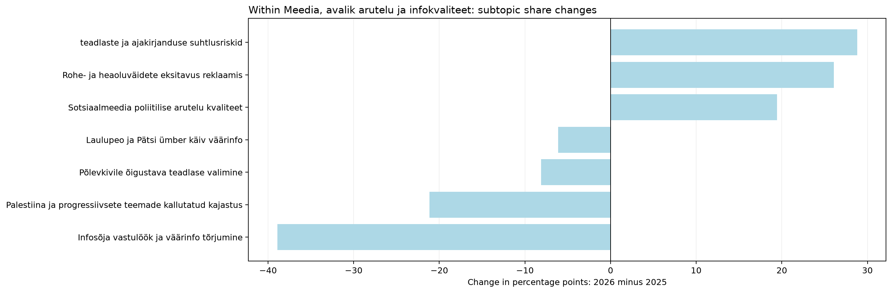
| jev_topic_id | jev_topic_name | jev_high_level_id | jev_high_level_name | minutes_2025 | minutes_2026 | segments_2025 | segments_2026 | talks_2025 | talks_2026 | time_share_2025 | segment_share_2025 | talk_coverage_2025 | assigned_time_share_2025 | time_share_2026 | segment_share_2026 | talk_coverage_2026 | assigned_time_share_2026 | time_share_delta_pp | segment_share_delta_pp | talk_coverage_delta_pp | assigned_time_share_delta_pp | status | supported_2026 | supported_2025 | within_parent_share_2025 | within_parent_share_2026 | within_parent_delta_pp | parent_scale_component_pp | within_parent_mix_component_pp |
|---|---|---|---|---|---|---|---|---|---|---|---|---|---|---|---|---|---|---|---|---|---|---|---|---|---|---|---|---|---|
| 19.0 | teadlaste ja ajakirjanduse suhtlusriskid | media | Meedia, avalik arutelu ja infokvaliteet | 0.00 | 84.56 | 0.0 | 19.0 | 0.0 | 2.0 | 0.00 | 0.00 | 0.00 | 0.00 | 0.92 | 0.96 | 1.90 | 0.98 | 0.92 | 0.96 | 1.90 | 0.98 | only_observed_2026 | True | False | 0.00 | 28.80 | 28.80 | 0.00 | 0.92 |
| 113.0 | Rohe- ja heaoluväidete eksitavus reklaamis | media | Meedia, avalik arutelu ja infokvaliteet | 2.85 | 80.34 | 1.0 | 14.0 | 1.0 | 1.0 | 0.03 | 0.05 | 0.88 | 0.03 | 0.88 | 0.71 | 0.95 | 0.93 | 0.85 | 0.66 | 0.08 | 0.90 | both_years | False | False | 1.29 | 27.36 | 26.07 | 0.01 | 0.84 |
| 114.0 | Sotsiaalmeedia poliitilise arutelu kvaliteet | media | Meedia, avalik arutelu ja infokvaliteet | 20.39 | 84.07 | 4.0 | 19.0 | 4.0 | 2.0 | 0.21 | 0.19 | 3.51 | 0.22 | 0.92 | 0.96 | 1.90 | 0.97 | 0.71 | 0.77 | -1.60 | 0.75 | both_years | True | True | 9.20 | 28.63 | 19.43 | 0.09 | 0.62 |
| 148.0 | Infosõja vastulöök ja väärinfo tõrjumine | media | Meedia, avalik arutelu ja infokvaliteet | 119.89 | 44.66 | 24.0 | 11.0 | 5.0 | 6.0 | 1.21 | 1.11 | 4.39 | 1.30 | 0.49 | 0.56 | 5.71 | 0.52 | -0.72 | -0.56 | 1.33 | -0.79 | both_years | True | True | 54.11 | 15.21 | -38.90 | 0.53 | -1.25 |
| 215.0 | Laulupeo ja Pätsi ümber käiv väärinfo | media | Meedia, avalik arutelu ja infokvaliteet | 13.60 | 0.00 | 4.0 | 0.0 | 1.0 | 0.0 | 0.14 | 0.19 | 0.88 | 0.15 | 0.00 | 0.00 | 0.00 | 0.00 | -0.14 | -0.19 | -0.88 | -0.15 | only_observed_2025 | False | False | 6.14 | 0.00 | -6.14 | 0.06 | -0.20 |
| 219.0 | Palestiina ja progressiivsete teemade kallutatud kajastus | media | Meedia, avalik arutelu ja infokvaliteet | 46.82 | 0.00 | 10.0 | 0.0 | 2.0 | 0.0 | 0.47 | 0.46 | 1.75 | 0.51 | 0.00 | 0.00 | 0.00 | 0.00 | -0.47 | -0.46 | -1.75 | -0.51 | only_observed_2025 | False | True | 21.13 | 0.00 | -21.13 | 0.21 | -0.68 |
| 227.0 | Põlevkivile õigustava teadlase valimine | media | Meedia, avalik arutelu ja infokvaliteet | 18.02 | 0.00 | 5.0 | 0.0 | 1.0 | 0.0 | 0.18 | 0.23 | 0.88 | 0.20 | 0.00 | 0.00 | 0.00 | 0.00 | -0.18 | -0.23 | -0.88 | -0.20 | only_observed_2025 | False | False | 8.13 | 0.00 | -8.13 | 0.08 | -0.26 |
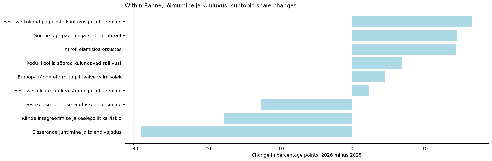
| jev_topic_id | jev_topic_name | jev_high_level_id | jev_high_level_name | minutes_2025 | minutes_2026 | segments_2025 | segments_2026 | talks_2025 | talks_2026 | time_share_2025 | segment_share_2025 | talk_coverage_2025 | assigned_time_share_2025 | time_share_2026 | segment_share_2026 | talk_coverage_2026 | assigned_time_share_2026 | time_share_delta_pp | segment_share_delta_pp | talk_coverage_delta_pp | assigned_time_share_delta_pp | status | supported_2026 | supported_2025 | within_parent_share_2025 | within_parent_share_2026 | within_parent_delta_pp | parent_scale_component_pp | within_parent_mix_component_pp |
|---|---|---|---|---|---|---|---|---|---|---|---|---|---|---|---|---|---|---|---|---|---|---|---|---|---|---|---|---|---|
| 65.0 | AI roll elamisloa otsustes | migration | Ränne, lõimumine ja kuuluvus | 0.00 | 67.53 | 0.0 | 13.0 | 0.0 | 1.0 | 0.00 | 0.00 | 0.00 | 0.00 | 0.74 | 0.66 | 0.95 | 0.78 | 0.74 | 0.66 | 0.95 | 0.78 | only_observed_2026 | False | False | 0.00 | 14.33 | 14.33 | 0.00 | 0.74 |
| 74.0 | eestikeelse suhtluse ja ühiskeele otsimine | migration | Ränne, lõimumine ja kuuluvus | 29.18 | 6.77 | 7.0 | 2.0 | 3.0 | 2.0 | 0.29 | 0.32 | 2.63 | 0.32 | 0.07 | 0.10 | 1.90 | 0.08 | -0.22 | -0.22 | -0.73 | -0.24 | both_years | False | True | 13.92 | 1.44 | -12.48 | 0.42 | -0.64 |
| 79.0 | Kodu, kool ja sõbrad kujundavad sallivust | migration | Ränne, lõimumine ja kuuluvus | 22.38 | 82.73 | 4.0 | 15.0 | 3.0 | 4.0 | 0.23 | 0.19 | 2.63 | 0.24 | 0.90 | 0.76 | 3.81 | 0.96 | 0.68 | 0.57 | 1.18 | 0.71 | both_years | True | True | 10.67 | 17.56 | 6.89 | 0.32 | 0.35 |
| 92.0 | Soome-ugri pagulus ja keeleidentiteet | migration | Ränne, lõimumine ja kuuluvus | 0.00 | 67.87 | 0.0 | 14.0 | 0.0 | 1.0 | 0.00 | 0.00 | 0.00 | 0.00 | 0.74 | 0.71 | 0.95 | 0.78 | 0.74 | 0.71 | 0.95 | 0.78 | only_observed_2026 | False | False | 0.00 | 14.40 | 14.40 | 0.00 | 0.74 |
| 93.0 | Eestisse kolijate kuuluvustunne ja kohanemine | migration | Ränne, lõimumine ja kuuluvus | 31.45 | 81.89 | 6.0 | 18.0 | 2.0 | 6.0 | 0.32 | 0.28 | 1.75 | 0.34 | 0.90 | 0.91 | 5.71 | 0.95 | 0.58 | 0.63 | 3.96 | 0.60 | both_years | True | True | 15.00 | 17.38 | 2.38 | 0.46 | 0.12 |
| 121.0 | Eestisse kolinud pagulaste kuuluvus ja kohanemine | migration | Ränne, lõimumine ja kuuluvus | 0.00 | 77.83 | 0.0 | 14.0 | 0.0 | 2.0 | 0.00 | 0.00 | 0.00 | 0.00 | 0.85 | 0.71 | 1.90 | 0.90 | 0.85 | 0.71 | 1.90 | 0.90 | only_observed_2026 | True | False | 0.00 | 16.52 | 16.52 | 0.00 | 0.85 |
| 133.0 | Rände integreerimise ja keelepoliitika riskid | migration | Ränne, lõimumine ja kuuluvus | 63.55 | 59.88 | 15.0 | 13.0 | 2.0 | 3.0 | 0.64 | 0.70 | 1.75 | 0.69 | 0.65 | 0.66 | 2.86 | 0.69 | 0.01 | -0.04 | 1.10 | 0.00 | both_years | True | True | 30.31 | 12.71 | -17.60 | 0.92 | -0.91 |
| 187.0 | Sisserände juhtimine ja talendivajadus | migration | Ränne, lõimumine ja kuuluvus | 63.10 | 5.56 | 14.0 | 2.0 | 4.0 | 2.0 | 0.64 | 0.65 | 3.51 | 0.68 | 0.06 | 0.10 | 1.90 | 0.06 | -0.58 | -0.55 | -1.60 | -0.62 | both_years | False | True | 30.10 | 1.18 | -28.91 | 0.91 | -1.49 |
| 206.0 | Euroopa rändereformi ja piirivalve valmisolek | migration | Ränne, lõimumine ja kuuluvus | 0.00 | 21.08 | 0.0 | 4.0 | 0.0 | 2.0 | 0.00 | 0.00 | 0.00 | 0.00 | 0.23 | 0.20 | 1.90 | 0.24 | 0.23 | 0.20 | 1.90 | 0.24 | only_observed_2026 | True | False | 0.00 | 4.47 | 4.47 | 0.00 | 0.23 |
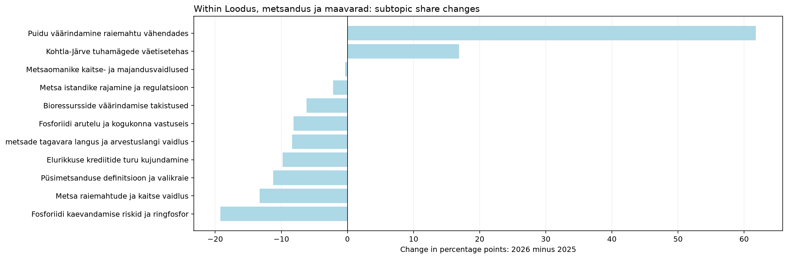
| jev_topic_id | jev_topic_name | jev_high_level_id | jev_high_level_name | minutes_2025 | minutes_2026 | segments_2025 | segments_2026 | talks_2025 | talks_2026 | time_share_2025 | segment_share_2025 | talk_coverage_2025 | assigned_time_share_2025 | time_share_2026 | segment_share_2026 | talk_coverage_2026 | assigned_time_share_2026 | time_share_delta_pp | segment_share_delta_pp | talk_coverage_delta_pp | assigned_time_share_delta_pp | status | supported_2026 | supported_2025 | within_parent_share_2025 | within_parent_share_2026 | within_parent_delta_pp | parent_scale_component_pp | within_parent_mix_component_pp |
|---|---|---|---|---|---|---|---|---|---|---|---|---|---|---|---|---|---|---|---|---|---|---|---|---|---|---|---|---|---|
| 55.0 | Püsimetsanduse definitsioon ja valikraie | nature | Loodus, metsandus ja maavarad | 88.16 | 0.00 | 18.0 | 0.0 | 1.0 | 0.0 | 0.89 | 0.84 | 0.88 | 0.96 | 0.00 | 0.00 | 0.00 | 0.00 | -0.89 | -0.84 | -0.88 | -0.96 | only_observed_2025 | False | False | 11.25 | 0.00 | -11.25 | -0.85 | -0.04 |
| 61.0 | Elurikkuse krediitide turu kujundamine | nature | Loodus, metsandus ja maavarad | 76.84 | 0.00 | 16.0 | 0.0 | 1.0 | 0.0 | 0.77 | 0.74 | 0.88 | 0.83 | 0.00 | 0.00 | 0.00 | 0.00 | -0.77 | -0.74 | -0.88 | -0.83 | only_observed_2025 | False | False | 9.80 | 0.00 | -9.80 | -0.74 | -0.03 |
| 69.0 | Kohtla-Järve tuhamägede väetisetehas | nature | Loodus, metsandus ja maavarad | 6.06 | 5.44 | 2.0 | 1.0 | 1.0 | 1.0 | 0.06 | 0.09 | 0.88 | 0.07 | 0.06 | 0.05 | 0.95 | 0.06 | -0.00 | -0.04 | 0.08 | -0.00 | both_years | False | False | 0.77 | 17.68 | 16.91 | -0.06 | 0.06 |
| 72.0 | Metsaomanike kaitse- ja majandusvaidlused | nature | Loodus, metsandus ja maavarad | 98.17 | 3.75 | 18.0 | 1.0 | 4.0 | 1.0 | 0.99 | 0.84 | 3.51 | 1.07 | 0.04 | 0.05 | 0.95 | 0.04 | -0.95 | -0.79 | -2.56 | -1.02 | both_years | False | True | 12.52 | 12.20 | -0.33 | -0.95 | -0.00 |
| 87.0 | Fosforiidi kaevandamise riskid ja ringfosfor | nature | Loodus, metsandus ja maavarad | 150.56 | 0.00 | 30.0 | 0.0 | 2.0 | 0.0 | 1.52 | 1.39 | 1.75 | 1.63 | 0.00 | 0.00 | 0.00 | 0.00 | -1.52 | -1.39 | -1.75 | -1.63 | only_observed_2025 | False | True | 19.20 | 0.00 | -19.20 | -1.45 | -0.06 |
| 166.0 | Puidu väärindamine raiemahtu vähendades | nature | Loodus, metsandus ja maavarad | 65.29 | 21.57 | 14.0 | 6.0 | 5.0 | 3.0 | 0.66 | 0.65 | 4.39 | 0.71 | 0.24 | 0.30 | 2.86 | 0.25 | -0.42 | -0.35 | -1.53 | -0.46 | both_years | True | True | 8.33 | 70.12 | 61.80 | -0.63 | 0.21 |
| 167.0 | metsade tagavara langus ja arvestuslangi vaidlus | nature | Loodus, metsandus ja maavarad | 65.57 | 0.00 | 13.0 | 0.0 | 2.0 | 0.0 | 0.66 | 0.60 | 1.75 | 0.71 | 0.00 | 0.00 | 0.00 | 0.00 | -0.66 | -0.60 | -1.75 | -0.71 | only_observed_2025 | False | True | 8.36 | 0.00 | -8.36 | -0.63 | -0.03 |
| 200.0 | Metsa raiemahtude ja kaitse vaidlus | nature | Loodus, metsandus ja maavarad | 104.10 | 0.00 | 24.0 | 0.0 | 6.0 | 0.0 | 1.05 | 1.11 | 5.26 | 1.13 | 0.00 | 0.00 | 0.00 | 0.00 | -1.05 | -1.11 | -5.26 | -1.13 | only_observed_2025 | False | True | 13.28 | 0.00 | -13.28 | -1.00 | -0.04 |
| 220.0 | Bioressursside väärindamise takistused | nature | Loodus, metsandus ja maavarad | 48.50 | 0.00 | 9.0 | 0.0 | 1.0 | 0.0 | 0.49 | 0.42 | 0.88 | 0.53 | 0.00 | 0.00 | 0.00 | 0.00 | -0.49 | -0.42 | -0.88 | -0.53 | only_observed_2025 | False | False | 6.19 | 0.00 | -6.19 | -0.47 | -0.02 |
| 221.0 | Metsa istandike rajamine ja regulatsioon | nature | Loodus, metsandus ja maavarad | 16.95 | 0.00 | 4.0 | 0.0 | 1.0 | 0.0 | 0.17 | 0.19 | 0.88 | 0.18 | 0.00 | 0.00 | 0.00 | 0.00 | -0.17 | -0.19 | -0.88 | -0.18 | only_observed_2025 | False | False | 2.16 | 0.00 | -2.16 | -0.16 | -0.01 |
| 231.0 | Fosforiidi arutelu ja kogukonna vastuseis | nature | Loodus, metsandus ja maavarad | 63.77 | 0.00 | 14.0 | 0.0 | 4.0 | 0.0 | 0.64 | 0.65 | 3.51 | 0.69 | 0.00 | 0.00 | 0.00 | 0.00 | -0.64 | -0.65 | -3.51 | -0.69 | only_observed_2025 | False | True | 8.13 | 0.00 | -8.13 | -0.62 | -0.03 |
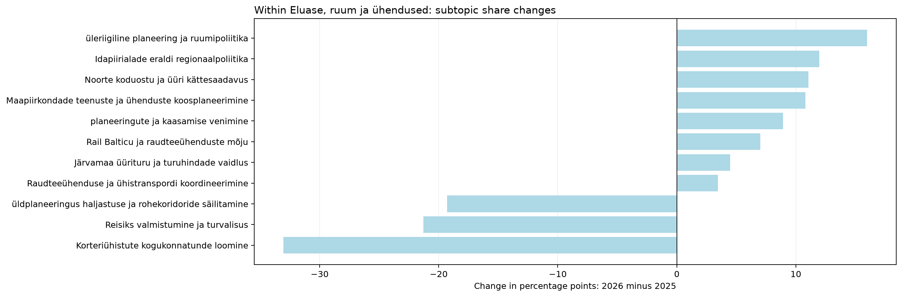
| jev_topic_id | jev_topic_name | jev_high_level_id | jev_high_level_name | minutes_2025 | minutes_2026 | segments_2025 | segments_2026 | talks_2025 | talks_2026 | time_share_2025 | segment_share_2025 | talk_coverage_2025 | assigned_time_share_2025 | time_share_2026 | segment_share_2026 | talk_coverage_2026 | assigned_time_share_2026 | time_share_delta_pp | segment_share_delta_pp | talk_coverage_delta_pp | assigned_time_share_delta_pp | status | supported_2026 | supported_2025 | within_parent_share_2025 | within_parent_share_2026 | within_parent_delta_pp | parent_scale_component_pp | within_parent_mix_component_pp |
|---|---|---|---|---|---|---|---|---|---|---|---|---|---|---|---|---|---|---|---|---|---|---|---|---|---|---|---|---|---|
| 27.0 | Reisiks valmistumine ja turvalisus | place | Eluase, ruum ja ühendused | 55.83 | 0.00 | 12.0 | 0.0 | 1.0 | 0.0 | 0.56 | 0.56 | 0.88 | 0.61 | 0.00 | 0.00 | 0.00 | 0.00 | -0.56 | -0.56 | -0.88 | -0.61 | only_observed_2025 | False | False | 21.28 | 0.00 | -21.28 | 0.76 | -1.32 |
| 42.0 | Idapiirialade eraldi regionaalpoliitika | place | Eluase, ruum ja ühendused | 3.31 | 75.28 | 1.0 | 16.0 | 1.0 | 1.0 | 0.03 | 0.05 | 0.88 | 0.04 | 0.82 | 0.81 | 0.95 | 0.87 | 0.79 | 0.76 | 0.08 | 0.83 | both_years | False | False | 1.26 | 13.23 | 11.96 | 0.05 | 0.74 |
| 56.0 | Noorte koduostu ja üüri kättesaadavus | place | Eluase, ruum ja ühendused | 4.98 | 73.80 | 1.0 | 16.0 | 1.0 | 3.0 | 0.05 | 0.05 | 0.88 | 0.05 | 0.81 | 0.81 | 2.86 | 0.85 | 0.76 | 0.76 | 1.98 | 0.80 | both_years | True | False | 1.90 | 12.97 | 11.07 | 0.07 | 0.69 |
| 62.0 | Rail Balticu ja raudteeühenduste mõju | place | Eluase, ruum ja ühendused | 10.41 | 62.50 | 2.0 | 16.0 | 1.0 | 3.0 | 0.10 | 0.09 | 0.88 | 0.11 | 0.68 | 0.81 | 2.86 | 0.72 | 0.58 | 0.72 | 1.98 | 0.61 | both_years | True | False | 3.97 | 10.98 | 7.01 | 0.14 | 0.44 |
| 73.0 | Korteriühistute kogukonnatunde loomine | place | Eluase, ruum ja ühendused | 86.70 | 0.00 | 19.0 | 0.0 | 1.0 | 0.0 | 0.87 | 0.88 | 0.88 | 0.94 | 0.00 | 0.00 | 0.00 | 0.00 | -0.87 | -0.88 | -0.88 | -0.94 | only_observed_2025 | False | False | 33.05 | 0.00 | -33.05 | 1.18 | -2.06 |
| 94.0 | planeeringute ja kaasamise venimine | place | Eluase, ruum ja ühendused | 14.13 | 81.35 | 3.0 | 19.0 | 1.0 | 6.0 | 0.14 | 0.14 | 0.88 | 0.15 | 0.89 | 0.96 | 5.71 | 0.94 | 0.75 | 0.82 | 4.84 | 0.79 | both_years | True | False | 5.39 | 14.29 | 8.91 | 0.19 | 0.55 |
| 103.0 | üleriigiline planeering ja ruumipoliitika | place | Eluase, ruum ja ühendused | 17.97 | 129.92 | 3.0 | 31.0 | 2.0 | 4.0 | 0.18 | 0.14 | 1.75 | 0.20 | 1.42 | 1.57 | 3.81 | 1.50 | 1.24 | 1.43 | 2.06 | 1.30 | both_years | True | True | 6.85 | 22.83 | 15.98 | 0.25 | 0.99 |
| 136.0 | Maapiirkondade teenuste ja ühenduste koosplaneerimine | place | Eluase, ruum ja ühendused | 11.44 | 86.22 | 2.0 | 19.0 | 2.0 | 5.0 | 0.12 | 0.09 | 1.75 | 0.12 | 0.94 | 0.96 | 4.76 | 1.00 | 0.83 | 0.87 | 3.01 | 0.87 | both_years | True | True | 4.36 | 15.15 | 10.79 | 0.16 | 0.67 |
| 140.0 | üldplaneeringus haljastuse ja rohekoridoride säilitamine | place | Eluase, ruum ja ühendused | 54.86 | 9.17 | 9.0 | 1.0 | 1.0 | 1.0 | 0.55 | 0.42 | 0.88 | 0.60 | 0.10 | 0.05 | 0.95 | 0.11 | -0.45 | -0.37 | 0.08 | -0.49 | both_years | False | False | 20.91 | 1.61 | -19.30 | 0.75 | -1.20 |
| 193.0 | Raudteeühenduse ja ühistranspordi koordineerimine | place | Eluase, ruum ja ühendused | 2.68 | 25.48 | 1.0 | 5.0 | 1.0 | 2.0 | 0.03 | 0.05 | 0.88 | 0.03 | 0.28 | 0.25 | 1.90 | 0.29 | 0.25 | 0.21 | 1.03 | 0.26 | both_years | True | False | 1.02 | 4.48 | 3.45 | 0.04 | 0.21 |
| 210.0 | Järvamaa üürituru ja turuhindade vaidlus | place | Eluase, ruum ja ühendused | 0.00 | 25.45 | 0.0 | 4.0 | 0.0 | 1.0 | 0.00 | 0.00 | 0.00 | 0.00 | 0.28 | 0.20 | 0.95 | 0.29 | 0.28 | 0.20 | 0.95 | 0.29 | only_observed_2026 | False | False | 0.00 | 4.47 | 4.47 | 0.00 | 0.28 |
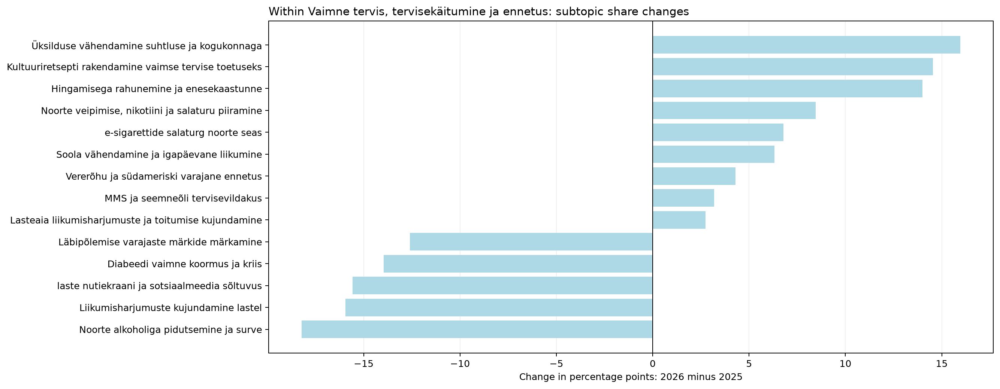
| jev_topic_id | jev_topic_name | jev_high_level_id | jev_high_level_name | minutes_2025 | minutes_2026 | segments_2025 | segments_2026 | talks_2025 | talks_2026 | time_share_2025 | segment_share_2025 | talk_coverage_2025 | assigned_time_share_2025 | time_share_2026 | segment_share_2026 | talk_coverage_2026 | assigned_time_share_2026 | time_share_delta_pp | segment_share_delta_pp | talk_coverage_delta_pp | assigned_time_share_delta_pp | status | supported_2026 | supported_2025 | within_parent_share_2025 | within_parent_share_2026 | within_parent_delta_pp | parent_scale_component_pp | within_parent_mix_component_pp |
|---|---|---|---|---|---|---|---|---|---|---|---|---|---|---|---|---|---|---|---|---|---|---|---|---|---|---|---|---|---|
| 11.0 | laste nutiekraani ja sotsiaalmeedia sõltuvus | wellbeing | Vaimne tervis, tervisekäitumine ja ennetus | 120.22 | 58.20 | 28.0 | 13.0 | 6.0 | 3.0 | 1.21 | 1.30 | 5.26 | 1.30 | 0.64 | 0.66 | 2.86 | 0.67 | -0.58 | -0.64 | -2.41 | -0.63 | both_years | True | True | 26.54 | 10.97 | -15.57 | 0.33 | -0.90 |
| 14.0 | Üksilduse vähendamine suhtluse ja kogukonnaga | wellbeing | Vaimne tervis, tervisekäitumine ja ennetus | 6.60 | 92.49 | 3.0 | 23.0 | 3.0 | 2.0 | 0.07 | 0.14 | 2.63 | 0.07 | 1.01 | 1.16 | 1.90 | 1.07 | 0.95 | 1.02 | -0.73 | 1.00 | both_years | True | False | 1.46 | 17.43 | 15.97 | 0.02 | 0.93 |
| 32.0 | Vererõhu ja südameriski varajane ennetus | wellbeing | Vaimne tervis, tervisekäitumine ja ennetus | 8.13 | 32.36 | 2.0 | 6.0 | 1.0 | 2.0 | 0.08 | 0.09 | 0.88 | 0.09 | 0.35 | 0.30 | 1.90 | 0.37 | 0.27 | 0.21 | 1.03 | 0.29 | both_years | True | False | 1.79 | 6.10 | 4.30 | 0.02 | 0.25 |
| 99.0 | Hingamisega rahunemine ja enesekaastunne | wellbeing | Vaimne tervis, tervisekäitumine ja ennetus | 0.00 | 74.29 | 0.0 | 14.0 | 0.0 | 2.0 | 0.00 | 0.00 | 0.00 | 0.00 | 0.81 | 0.71 | 1.90 | 0.86 | 0.81 | 0.71 | 1.90 | 0.86 | only_observed_2026 | True | False | 0.00 | 14.00 | 14.00 | 0.00 | 0.81 |
| 101.0 | Liikumisharjumuste kujundamine lastel | wellbeing | Vaimne tervis, tervisekäitumine ja ennetus | 75.51 | 3.84 | 15.0 | 2.0 | 2.0 | 2.0 | 0.76 | 0.70 | 1.75 | 0.82 | 0.04 | 0.10 | 1.90 | 0.04 | -0.72 | -0.60 | 0.15 | -0.78 | both_years | False | True | 16.67 | 0.72 | -15.94 | 0.21 | -0.93 |
| 108.0 | Kultuuriretsepti rakendamine vaimse tervise toetuseks | wellbeing | Vaimne tervis, tervisekäitumine ja ennetus | 0.00 | 77.15 | 0.0 | 14.0 | 0.0 | 1.0 | 0.00 | 0.00 | 0.00 | 0.00 | 0.84 | 0.71 | 0.95 | 0.89 | 0.84 | 0.71 | 0.95 | 0.89 | only_observed_2026 | False | False | 0.00 | 14.54 | 14.54 | 0.00 | 0.84 |
| 111.0 | Diabeedi vaimne koormus ja kriis | wellbeing | Vaimne tervis, tervisekäitumine ja ennetus | 63.25 | 0.00 | 13.0 | 0.0 | 1.0 | 0.0 | 0.64 | 0.60 | 0.88 | 0.69 | 0.00 | 0.00 | 0.00 | 0.00 | -0.64 | -0.60 | -0.88 | -0.69 | only_observed_2025 | False | False | 13.96 | 0.00 | -13.96 | 0.17 | -0.81 |
| 158.0 | e-sigarettide salaturg noorte seas | wellbeing | Vaimne tervis, tervisekäitumine ja ennetus | 0.00 | 35.96 | 0.0 | 9.0 | 0.0 | 1.0 | 0.00 | 0.00 | 0.00 | 0.00 | 0.39 | 0.46 | 0.95 | 0.42 | 0.39 | 0.46 | 0.95 | 0.42 | only_observed_2026 | False | False | 0.00 | 6.78 | 6.78 | 0.00 | 0.39 |
| 163.0 | Läbipõlemise varajaste märkide märkamine | wellbeing | Vaimne tervis, tervisekäitumine ja ennetus | 74.46 | 20.37 | 16.0 | 5.0 | 5.0 | 3.0 | 0.75 | 0.74 | 4.39 | 0.81 | 0.22 | 0.25 | 2.86 | 0.24 | -0.53 | -0.49 | -1.53 | -0.57 | both_years | True | True | 16.44 | 3.84 | -12.60 | 0.20 | -0.73 |
| 178.0 | Noorte alkoholiga pidutsemine ja surve | wellbeing | Vaimne tervis, tervisekäitumine ja ennetus | 82.56 | 0.00 | 16.0 | 0.0 | 1.0 | 0.0 | 0.83 | 0.74 | 0.88 | 0.90 | 0.00 | 0.00 | 0.00 | 0.00 | -0.83 | -0.74 | -0.88 | -0.90 | only_observed_2025 | False | False | 18.23 | 0.00 | -18.23 | 0.23 | -1.06 |
| 184.0 | Noorte veipimise, nikotiini ja salaturu piiramine | wellbeing | Vaimne tervis, tervisekäitumine ja ennetus | 1.58 | 46.74 | 1.0 | 8.0 | 1.0 | 1.0 | 0.02 | 0.05 | 0.88 | 0.02 | 0.51 | 0.40 | 0.95 | 0.54 | 0.50 | 0.36 | 0.08 | 0.52 | both_years | False | False | 0.35 | 8.81 | 8.46 | 0.00 | 0.49 |
| 191.0 | Soola vähendamine ja igapäevane liikumine | wellbeing | Vaimne tervis, tervisekäitumine ja ennetus | 13.53 | 49.40 | 4.0 | 10.0 | 1.0 | 3.0 | 0.14 | 0.19 | 0.88 | 0.15 | 0.54 | 0.51 | 2.86 | 0.57 | 0.40 | 0.32 | 1.98 | 0.42 | both_years | True | False | 2.99 | 9.31 | 6.32 | 0.04 | 0.37 |
| 196.0 | Lasteaia liikumisharjumuste ja toitumise kujundamine | wellbeing | Vaimne tervis, tervisekäitumine ja ennetus | 0.00 | 14.59 | 0.0 | 3.0 | 0.0 | 1.0 | 0.00 | 0.00 | 0.00 | 0.00 | 0.16 | 0.15 | 0.95 | 0.17 | 0.16 | 0.15 | 0.95 | 0.17 | only_observed_2026 | False | False | 0.00 | 2.75 | 2.75 | 0.00 | 0.16 |
| 207.0 | MMS ja seemneõli tervisevildakus | wellbeing | Vaimne tervis, tervisekäitumine ja ennetus | 7.17 | 25.32 | 4.0 | 6.0 | 1.0 | 2.0 | 0.07 | 0.19 | 0.88 | 0.08 | 0.28 | 0.30 | 1.90 | 0.29 | 0.20 | 0.12 | 1.03 | 0.21 | both_years | True | False | 1.58 | 4.77 | 3.19 | 0.02 | 0.19 |
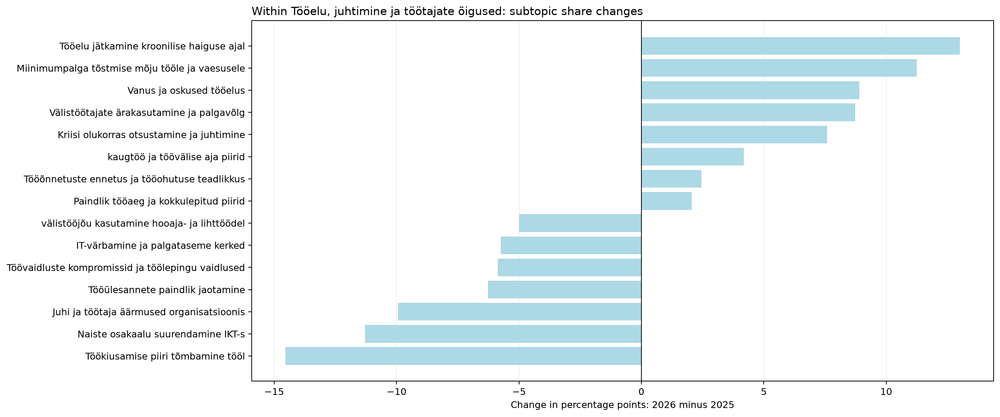
| jev_topic_id | jev_topic_name | jev_high_level_id | jev_high_level_name | minutes_2025 | minutes_2026 | segments_2025 | segments_2026 | talks_2025 | talks_2026 | time_share_2025 | segment_share_2025 | talk_coverage_2025 | assigned_time_share_2025 | time_share_2026 | segment_share_2026 | talk_coverage_2026 | assigned_time_share_2026 | time_share_delta_pp | segment_share_delta_pp | talk_coverage_delta_pp | assigned_time_share_delta_pp | status | supported_2026 | supported_2025 | within_parent_share_2025 | within_parent_share_2026 | within_parent_delta_pp | parent_scale_component_pp | within_parent_mix_component_pp |
|---|---|---|---|---|---|---|---|---|---|---|---|---|---|---|---|---|---|---|---|---|---|---|---|---|---|---|---|---|---|
| 1.0 | Tööõnnetuste ennetus ja tööohutuse teadlikkus | work | Tööelu, juhtimine ja töötajate õigused | 85.02 | 89.61 | 19.0 | 19.0 | 1.0 | 1.0 | 0.86 | 0.88 | 0.88 | 0.92 | 0.98 | 0.96 | 0.95 | 1.03 | 0.12 | 0.08 | 0.08 | 0.11 | both_years | False | False | 11.37 | 13.82 | 2.45 | -0.05 | 0.17 |
| 3.0 | Juhi ja töötaja äärmused organisatsioonis | work | Tööelu, juhtimine ja töötajate õigused | 81.95 | 6.57 | 16.0 | 3.0 | 2.0 | 3.0 | 0.83 | 0.74 | 1.75 | 0.89 | 0.07 | 0.15 | 2.86 | 0.08 | -0.75 | -0.59 | 1.10 | -0.81 | both_years | False | True | 10.96 | 1.01 | -9.95 | -0.05 | -0.71 |
| 16.0 | Töökiusamise piiri tõmbamine tööl | work | Tööelu, juhtimine ja töötajate õigused | 123.22 | 12.58 | 22.0 | 3.0 | 3.0 | 1.0 | 1.24 | 1.02 | 2.63 | 1.34 | 0.14 | 0.15 | 0.95 | 0.15 | -1.10 | -0.87 | -1.68 | -1.19 | both_years | False | True | 16.48 | 1.94 | -14.54 | -0.07 | -1.03 |
| 18.0 | Töökiusu ja vaidluste piiritlemine töösuhtes | work | Tööelu, juhtimine ja töötajate õigused | 61.37 | 56.61 | 12.0 | 10.0 | 3.0 | 2.0 | 0.62 | 0.56 | 2.63 | 0.67 | 0.62 | 0.51 | 1.90 | 0.65 | 0.00 | -0.05 | -0.73 | -0.01 | both_years | True | True | 8.21 | 8.73 | 0.52 | -0.04 | 0.04 |
| 21.0 | Tööelu jätkamine kroonilise haiguse ajal | work | Tööelu, juhtimine ja töötajate õigused | 0.00 | 84.34 | 0.0 | 17.0 | 0.0 | 1.0 | 0.00 | 0.00 | 0.00 | 0.00 | 0.92 | 0.86 | 0.95 | 0.97 | 0.92 | 0.86 | 0.95 | 0.97 | only_observed_2026 | False | False | 0.00 | 13.01 | 13.01 | -0.00 | 0.92 |
| 43.0 | Välistöötajate ärakasutamine ja palgavõlg | work | Tööelu, juhtimine ja töötajate õigused | 0.00 | 56.62 | 0.0 | 13.0 | 0.0 | 1.0 | 0.00 | 0.00 | 0.00 | 0.00 | 0.62 | 0.66 | 0.95 | 0.65 | 0.62 | 0.66 | 0.95 | 0.65 | only_observed_2026 | False | False | 0.00 | 8.73 | 8.73 | -0.00 | 0.62 |
| 71.0 | Miinimumpalga tõstmise mõju tööle ja vaesusele | work | Tööelu, juhtimine ja töötajate õigused | 3.92 | 76.30 | 1.0 | 13.0 | 1.0 | 2.0 | 0.04 | 0.05 | 0.88 | 0.04 | 0.83 | 0.66 | 1.90 | 0.88 | 0.79 | 0.61 | 1.03 | 0.84 | both_years | True | False | 0.52 | 11.77 | 11.24 | -0.00 | 0.80 |
| 82.0 | Vanus ja oskused tööelus | work | Tööelu, juhtimine ja töötajate õigused | 37.92 | 90.60 | 7.0 | 19.0 | 4.0 | 4.0 | 0.38 | 0.32 | 3.51 | 0.41 | 0.99 | 0.96 | 3.81 | 1.05 | 0.61 | 0.64 | 0.30 | 0.63 | both_years | True | True | 5.07 | 13.97 | 8.90 | -0.02 | 0.63 |
| 90.0 | kaugtöö ja töövälise aja piirid | work | Tööelu, juhtimine ja töötajate õigused | 12.15 | 37.70 | 3.0 | 8.0 | 2.0 | 3.0 | 0.12 | 0.14 | 1.75 | 0.13 | 0.41 | 0.40 | 2.86 | 0.44 | 0.29 | 0.27 | 1.10 | 0.30 | both_years | True | True | 1.63 | 5.81 | 4.19 | -0.01 | 0.30 |
| 119.0 | Naiste osakaalu suurendamine IKT-s | work | Tööelu, juhtimine ja töötajate õigused | 84.42 | 0.00 | 18.0 | 0.0 | 2.0 | 0.0 | 0.85 | 0.84 | 1.75 | 0.92 | 0.00 | 0.00 | 0.00 | 0.00 | -0.85 | -0.84 | -1.75 | -0.92 | only_observed_2025 | False | True | 11.29 | 0.00 | -11.29 | -0.05 | -0.80 |
| 122.0 | Tööülesannete paindlik jaotamine | work | Tööelu, juhtimine ja töötajate õigused | 46.83 | 0.00 | 8.0 | 0.0 | 1.0 | 0.0 | 0.47 | 0.37 | 0.88 | 0.51 | 0.00 | 0.00 | 0.00 | 0.00 | -0.47 | -0.37 | -0.88 | -0.51 | only_observed_2025 | False | False | 6.26 | 0.00 | -6.26 | -0.03 | -0.44 |
| 138.0 | Kriisi olukorras otsustamine ja juhtimine | work | Tööelu, juhtimine ja töötajate õigused | 13.56 | 60.89 | 4.0 | 14.0 | 4.0 | 3.0 | 0.14 | 0.19 | 3.51 | 0.15 | 0.67 | 0.71 | 2.86 | 0.70 | 0.53 | 0.52 | -0.65 | 0.56 | both_years | True | True | 1.81 | 9.39 | 7.58 | -0.01 | 0.54 |
| 168.0 | Paindlik tööaeg ja kokkulepitud piirid | work | Tööelu, juhtimine ja töötajate õigused | 45.61 | 52.86 | 10.0 | 13.0 | 4.0 | 2.0 | 0.46 | 0.46 | 3.51 | 0.50 | 0.58 | 0.66 | 1.90 | 0.61 | 0.12 | 0.19 | -1.60 | 0.12 | both_years | True | True | 6.10 | 8.15 | 2.05 | -0.03 | 0.15 |
| 202.0 | IT-värbamine ja palgataseme kerked | work | Tööelu, juhtimine ja töötajate õigused | 42.90 | 0.00 | 7.0 | 0.0 | 2.0 | 0.0 | 0.43 | 0.32 | 1.75 | 0.47 | 0.00 | 0.00 | 0.00 | 0.00 | -0.43 | -0.32 | -1.75 | -0.47 | only_observed_2025 | False | True | 5.74 | 0.00 | -5.74 | -0.03 | -0.41 |
| 214.0 | välistööjõu kasutamine hooaja- ja lihttöödel | work | Tööelu, juhtimine ja töötajate õigused | 45.37 | 6.93 | 8.0 | 1.0 | 1.0 | 1.0 | 0.46 | 0.37 | 0.88 | 0.49 | 0.08 | 0.05 | 0.95 | 0.08 | -0.38 | -0.32 | 0.08 | -0.41 | both_years | False | False | 6.07 | 1.07 | -5.00 | -0.03 | -0.35 |
| 218.0 | Töövaidluste kompromissid ja töölepingu vaidlused | work | Tööelu, juhtimine ja töötajate õigused | 63.32 | 16.83 | 12.0 | 4.0 | 2.0 | 2.0 | 0.64 | 0.56 | 1.75 | 0.69 | 0.18 | 0.20 | 1.90 | 0.19 | -0.45 | -0.35 | 0.15 | -0.49 | both_years | True | True | 8.47 | 2.60 | -5.87 | -0.04 | -0.42 |